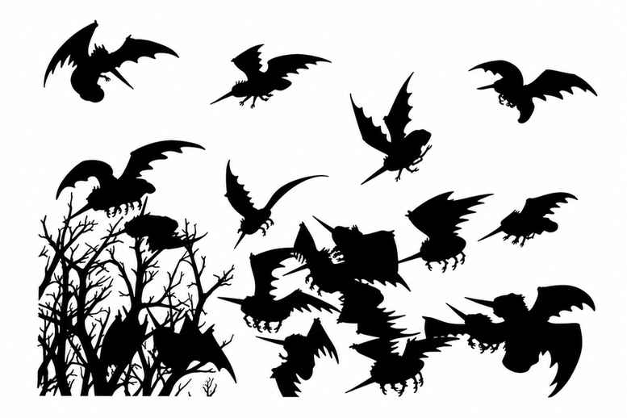
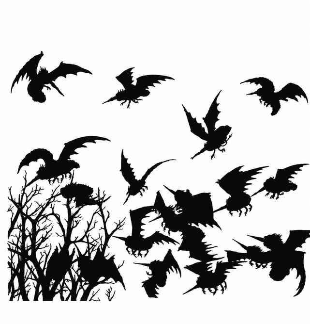
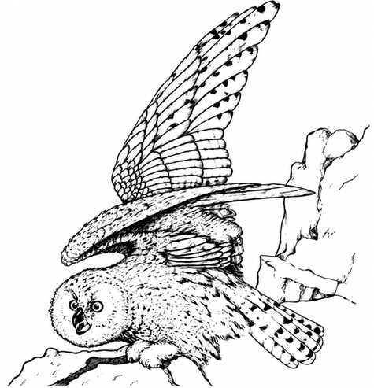
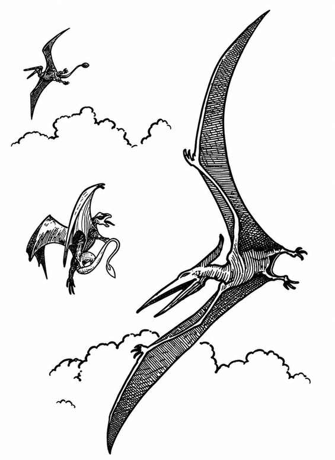
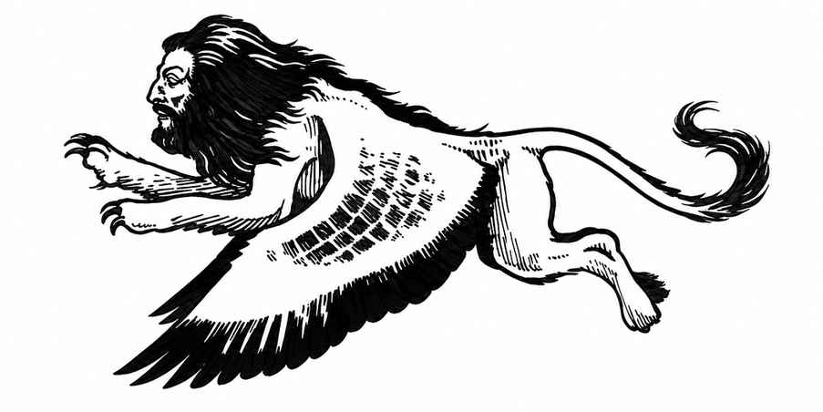
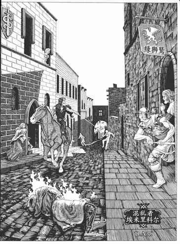

附录 C：随机怪物遭遇 · Appendix C: Random Monster Encounters
本附录提供战役过程中判定随机怪物遭遇的程序与表格。《高级龙与地下城》的规则与生物仍在不断发展，因此本附录基本只收录《怪物图鉴》中的怪物。两个显著例外是出自 AD&D 模组 D3《卓尔之域》的 mezzodaemon 与 nycadaemon。若没有该模组，遇到这两种结果时只需忽略并重新掷骰。
未来版本或许会更新，以纳入所有已知的 AD&D 怪物。地下城主也可以现在自行扩充：查找新怪物的经验值，并与本附录中的怪物对照；确定其出现频率（常见、不常见等），再把它们加到合适表格中相近怪物之后。注意不要破坏概率平衡。
怪物等级 II Monster Level II
| 骰值 | 遭遇生物 | 数量 |
|---|---|---|
| 01 | 巨獾 | 1–4 |
| 02–16 | 巨型蜈蚣 | 3–13 |
| 17–27 | 角色——见“角色子表” | — |
| 28–29 | 恶魔，勒姆勒 | 2–5 |
| 30–31 | 气囊孢子 | 1–2 |
| 32–38 | 豺狼人 | 4–10 |
| 39–46 | 穿刺怪 | 1–4 |
| 47–58 | 巨鼠 | 6–24 |
| 59–60 | 腐尸蛆 | 1–4 |
| 61–72 | 尖叫蕈 | 1–3 |
| 73–77 | 吸血蝠 | 5–15 |
| 78–87 | 巨蟾蜍 | 1–4 |
| 88–00 | 蜥人 | 2–8 |
\* 巨型蜈蚣不会在地下城第 3 层以下（更深处）遭遇；此后若掷出该结果，改按 32–38（豺狼人）处理。
龙类子表 Dragon Subtable
| 骰值 | 龙种 | 年龄类别（每骰生命骰数） |
|---|---|---|
| 01–09 | 黑龙 | 青年／亚成年（2／3） |
| 10–20 | 蓝龙 | 极幼龙／幼龙（1／2） |
| 21–30 | 黄铜龙 | 青年／亚成年（2／3） |
| 31–37 | 青铜龙 | 极幼龙／幼龙（1／2） |
| 38–50 | 赤铜龙 | 极幼龙／幼龙（1／2） |
| 51–54 | 金龙 | 极幼龙／幼龙（1／2） |
| 55–70 | 绿龙 | 极幼龙／幼龙（1／2） |
| 71–80 | 红龙 | 极幼龙／幼龙（1／2） |
| 81–88 | 银龙 | 极幼龙／幼龙（1／2） |
| 89–00 | 白龙 | 青年／亚成年（2／3） |
按通常规则确定龙的生命骰数。

怪物等级 III Monster Level III
| 骰值 | 遭遇生物 | 数量 |
|---|---|---|
| 01–10 | 钻洞甲虫 | 1–3 |
| 11–20 | 熊地精 | 2–7 |
| 21–30 | 角色——见“角色子表” | — |
| 31–32 | 龙——见下方龙类子表 | 1 |
| 33–34 | 紫色真菌 | 1–3 |
| 35–40 | 凝胶立方体 | 1 |
| 41–45 | 食尸鬼 | 1–4 |
| 46–50 | 巨蜥 | 1–3 |
| 51–54 | 鼠化人 | 2–5 |
| 55–60 | 赭色胶 | 1 |
| 61–72 | 食人魔 | 1–3 |
| 73–74 | 穿刺怪 | 2–5 |
| 75 | 腐尸蛆 | 1–4 |
| 76–77 | 尖叫蕈 | 2–5 |
| 78–84 | 巨型蜘蛛 | 1–3 |
| 85–93 | 大型蜘蛛 | 2–5 |
| 94–95 | 巨蜱 | 1–3 |
| 96–00 | 巨鼬 | 1–4 |
龙类子表 Dragon Subtable
| 骰值 | 龙种 | 年龄类别（每骰生命骰数） |
|---|---|---|
| 01–28 | 黑龙 | 极幼龙（1） |
| 29–62 | 黄铜龙 | 极幼龙（1） |
| 63–00 | 白龙 | 极幼龙（1） |
按通常规则确定龙的生命骰数。
怪物等级 IV Monster Level IV
| 骰值 | 遭遇生物 | 数量 |
|---|---|---|
| 01–08 | 食肉猿 | 1–3 |
| 09–14 | 闪现犬 | 2–5 |
| 15–22 | 角色——见“角色子表” | — |
| 23–24 | 龙——见龙类子表 | 1 |
| 25–30 | 石像鬼 | 1–2 |
| 31–36 | 鬼魂 | 1–4 |
| 37–40 | 灰胶 | 1 |
| 41–44 | 地狱犬 | 1–2 |
| 45–47 | 五头或六头蛇怪 | 1 |
| 48 | 火蛇怪，五头 | 1 |
| 49–62 | 狼化人 | 1–2 |
| 63–75 | 黄霉 | — |
| 76–78 | 枭熊 | 1–2 |
| 79 | 锈怪 | 1 |
| 80–82 | 暗影 | 1–3 |
| 83–90 | 巨型蟒蛇 | 1 |
| 91–94 | 苏怪 | 1–2 |
| 95–96 | 冰蟾蜍 | 1 |
| 97–00 | 毒蟾蜍 | 1–3 |
怪物等级 V Monster Level V
| 骰值 | 遭遇生物 | 数量 |
|---|---|---|
| 01–08 | 角色——见“角色子表” | — |
| 09–15 | 鸡蛇 | 1–2 |
| 16–18 | 移位兽 | 1–2 |
| 19–22 | 变形怪 | 1–3 |
| 23–24 | 龙——见下方龙类子表 | 1 |
| 25–26 | 七头蛇怪 | 1 |
| 27 | 火蛇怪，六头 | 1 |
| 28 | 小魔鬼 | 1–2 |
| 29–31 | 豺狼狮 | 1–2 |
| 32–50 | 地底蜥蜴 | 1–3 |
| 51–52 | 野猪化人 | 1–3 |
| 53–60 | 牛头人 | 1–3 |
| 61–64 | 黄霉 | — |
| 65 | 奎西特 | 1 |
| 66–67 | 锈怪 | 1 |
| 68–70 | 尖叫蕈 | 2–5 |
| 71–72 | 潜行追踪者 | 1 |
| 73–74 | 双头蛇 | 1 |
| 75–82 | 巨型毒蛇 | 1 |
| 83–86 | 巨型喷吐蛇 | 1 |
| 87–00 | 巨型蜘蛛 | 1–2 |
龙类子表 Dragon Subtable
| 骰值 | 龙种 | 年龄类别（每骰生命骰数） |
|---|---|---|
| 01–08 | 黑龙 | 青年成龙／成年龙（4／5） |
| 09–20 | 蓝龙 | 亚成年／青年成龙（3／4） |
| 21–30 | 黄铜龙 | 青年成龙／成年龙（4／5） |
| 31–37 | 青铜龙 | 亚成年／青年成龙（3／4） |
| 38–50 | 赤铜龙 | 亚成年／青年成龙（3／4） |
| 51–54 | 金龙 | 亚成年／青年成龙（3／4） |
| 55–70 | 绿龙 | 亚成年／青年成龙（3／4） |
| 71–80 | 红龙 | 亚成年／青年成龙（3／4） |
| 81–88 | 银龙 | 亚成年／青年成龙（3／4） |
| 89–00 | 白龙 | 青年成龙／成年龙（4／5） |
按通常规则确定龙的生命骰数。
怪物等级 VI Monster Level VI
| 骰值 | 遭遇生物 | 数量 |
|---|---|---|
| 01–03 | 石化蜥蜴 | 1 |
| 04–10 | 腐食爬虫 | 1–2 |
| 11–16 | 角色——见“角色子表” | — |
| 17 | 魔鬼，厄瑞倪厄斯 | 1–2 |
| 18–19 | 精灵 | 1 |
| 20–21 | 龙——见下方龙类子表 | 1 |
| 22–25 | 绿胶 | — |
| 26–28 | 八头或九头蛇怪 | 1 |
| 29–32 | 豺狼人 | 1–2 |
| 33–36 | 兰玛苏 | 1–3 |
| 37–38 | 熊化人 | 1 |
| 39–41 | 虎化人 | 1–2 |
| 42–50 | 蝎狮 | 1–2 |
| 51–55 | 美杜莎 | 1 |
| 56 | 褐霉 | — |
| 57–58 | 黄霉 | — |
| 59–60 | 食人魔法师 | 1–2 |
| 61–68 | 奥提尤格 | 1 |
| 69–70 | 罗刹 | 1 |
| 71–73 | 火蜥蜴 | 1–2 |
| 74–77 | 相位蜘蛛 | 1–3 |
| 78–88 | 巨魔 | 1–3 |
| 89–93 | 鬼面尸 | 1–4 |
| 94–95 | 风行者 | 1–2 |
| 96–98 | 怨灵 | 1–2 |
| 99–00 | 双足飞龙 | 1 |
龙类子表 Dragon Subtable
| 骰值 | 龙种 | 年龄类别（每骰生命骰数） |
|---|---|---|
| 01–08 | 黑龙 | 老年（6） |
| 09–19 | 蓝龙 | 成年（5） |
| 20–29 | 黄铜龙 | 老年（6） |
| 30–36 | 青铜龙 | 成年（5） |
| 37–48 | 赤铜龙 | 成年（5） |
| 49–52 | 金龙 | 成年（5） |
| 53–65 | 绿龙 | 成年（5） |
| 66–78 | 红龙 | 成年（5） |
| 79–87 | 银龙 | 成年（5） |
| 88–00 | 白龙 | 老年（6） |
按通常规则确定龙的生命骰数。
怪物等级 VII Monster Level VII
| 骰值 | 遭遇生物 | 数量 |
|---|---|---|
| 01–05 | 黑色布丁怪 | 1 |
| 06–10 | 角色——见“角色子表” | — |
| 11–14 | 奇美拉 | 1–2 |
| 15 | 恶魔，魅魔 | 1 |
| 16 | 恶魔，I 型 | 1 |
| 17 | 恶魔，II 型 | 1 |
| 18 | 恶魔，III 型 | 1 |
| 19 | 魔鬼，刺棘魔 | 1 |
| 20 | 魔鬼，骨魔 | 1 |
| 21 | 魔鬼，角魔 | 1 |
| 22–23 | 龙——见下方龙类子表 | 1 |
| 24 | 火巨灵 | 1 |
| 25–26 | 元素* | 1–2 |
| 27–30 | 双头巨人 | 1–2 |
| 31–35 | 丘陵巨人或石巨人 | 1–3 |
| 36–38 | 火巨人或霜巨人 | 1–2 |
| 39 | 肉身魔像 | 1 |
| 40–41 | 石化兽 | 1 |
| 42–44 | 哀嚎女妖 | 1 |
| 45–47 | 十头至十二头蛇怪 | 1 |
| 48 | 火蛇怪，七头至九头 | 1 |
| 49 | 精神噬怪 | 1 |
| 50 | 隐形猎手 | 1 |
| 51–52 | 拉弥亚 | 1–2 |
| 53–56 | 火蜥蜴 | 1–3 |
| 57–59 | 潜伏者 | 1 |
| 60 | 梅佐恶魔 | 1 |
| 61–63 | 拟形怪 | 1 |
| 64–65 | 夺心魔 | 1–2 |
| 66–69 | 木乃伊 | 1–2 |
| 70 | 灵蛇 | 1–2 |
| 71–73 | 新奥提尤格 | 1 |
| 74 | 夜间女巫 | 1–2 |
| 75–78 | 绳怪 | 1 |
| 79–82 | 蹒跚怪 | 1–2 |
| 83–86 | 舍杜 | 1–2 |
| 87 | 巨型鼻涕虫 | 1 |
| 88–91 | 幽灵 | 1 |
| 92–93 | 陷阱怪 | 1 |
| 94–95 | 瘤背怪 | 1 |
| 96–97 | 鬼火 | 1–3 |
| 98–00 | 泽恩怪 | 1–3 |
\* 选择一种元素，或在适用时使用等概率随机决定。
龙类子表 Dragon Subtable
| 骰值 | 龙种 | 年龄类别（每骰生命骰数） |
|---|---|---|
| 01–10 | 黑龙 | 极老（7） |
| 11–21 | 蓝龙 | 老年（6） |
| 22–29 | 黄铜龙 | 极老（7） |
| 30–36 | 青铜龙 | 老年（6） |
| 37–48 | 赤铜龙 | 老年（6） |
| 49–52 | 金龙 | 老年（6） |
| 53–66 | 绿龙 | 老年（6） |
| 67–80 | 红龙 | 老年（6） |
| 81–87 | 银龙 | 老年（6） |
| 88–00 | 白龙 | 极老（7） |
按通常规则确定龙的生命骰数。
怪物等级 VIII Monster Level VIII
| 骰值 | 遭遇生物 | 数量 |
|---|---|---|
| 01 | 空中仆役 | 1 |
| 02–06 | 角色——见“角色子表” | — |
| 07 | 恶魔，IV 型 | 1 |
| 08 | 恶魔，V 型 | 1 |
| 09 | 恶魔，VI 型 | 1 |
| 10 | 魔鬼，冰魔 | 1 |
| 11–12 | 龙——见下方龙类子表 | 1 |
| 13–17 | 鬼魂 | 1 |
| 18–21 | 云巨人 | 1–2 |
| 22–23 | 黏土魔像 | 1 |
| 24–26 | 十三头至十六头蛇怪 | 1 |
| 27 | 火蛇怪，十二头 | 1 |
| 28–29 | 精神噬怪 | 1–2 |
| 30–35 | 潜伏者 | 1 |
| 36–41 | 褐霉 | — |
| 42–43 | 黄霉 | — |
| 44–47 | 夺心魔 | 1–4 |
| 48–50 | 守护灵蛇 | 1–2 |
| 51–56 | 新奥提尤格 | 1 |
| 57–64 | 紫虫 | 1 |
| 65–69 | 锈怪 | 1 |
| 70–73 | 巨型鼻涕虫 | 1 |
| 74–78 | 陷阱怪 | 1 |
| 79–86 | 吸血鬼 | 1 |
| 87–92 | 鬼火 | 2–5 |
| 93–00 | 泽恩怪 | 2–5 |
龙类子表 Dragon Subtable
| 骰值 | 龙种 | 年龄类别（每骰生命骰数） |
|---|---|---|
| 01–13 | 黑龙 | 远古（8） |
| 14–24 | 蓝龙 | 极老（7） |
| 25–31 | 黄铜龙 | 远古（8） |
| 32–35 | 青铜龙 | 极老（7） |
| 36–43 | 赤铜龙 | 极老（7） |
| 44–47 | 金龙 | 极老（7） |
| 48–62 | 绿龙 | 极老（7） |
| 63–78 | 红龙 | 极老（7） |
| 79–82 | 银龙 | 极老（7） |
| 83–00 | 白龙 | 远古（8） |
按通常规则确定龙的生命骰数。
怪物等级 IX Monster Level IX
| 骰值 | 遭遇生物 | 数量 |
|---|---|---|
| 01–09 | 角色——见“角色子表” | — |
| 10–12 | 魔鬼，深渊魔 | 1 |
| 13–15 | 龙——见下方龙类子表 | 1–2 |
| 16–21 | 风暴巨人 | 1–2 |
| 22–23 | 石魔像 | 1 |
| 24–30 | 十七头至二十头蛇怪 | 1 |
| 31–33 | 火蛇怪，十二头 | 1 |
| 34–40 | 褐霉 | — |
| 41–50 | 黄霉 | — |
| 51–52 | 尼卡恶魔 | 1 |
| 53–64 | 紫虫 | 1 |
| 65–67 | 锈怪 | 1 |
| 68–69 | 较小泰坦 | 1 |
| 70–73 | 次级泰坦 | 1 |
| 74–80 | 瘤背怪 | 1–4 |
| 81–83 | 吸血鬼* | 1 |
| 84–93 | 鬼火 | 2–5 |
| 94–00 | 泽恩怪 | 2–9 |
\* 前任牧师，拥有全部能力，等级为 7–10 级。
龙类子表 Dragon Subtable
| 骰值 | 龙种 | 年龄类别（每骰生命骰数） |
|---|---|---|
| 01–10 | 黑龙（2 只） | 远古与老年（8 与 6） |
| 11–22 | 蓝龙 | 远古（8） |
| 23–31 | 黄铜龙（2 只） | 远古与老年（8 与 6） |
| 32–34 | 青铜龙 | 远古（8） |
| 35–42 | 赤铜龙 | 远古（8） |
| 43–46 | 金龙 | 远古（8） |
| 47–62 | 绿龙 | 远古（8） |
| 63–78 | 红龙 | 远古（8） |
| 79–82 | 银龙 | 远古（8） |
| 83–00 | 白龙（2 只） | 远古与极老（8 与 7） |
按通常规则确定龙的生命骰数。
怪物等级 X Monster Level X
| 骰值 | 遭遇生物 | 数量 |
|---|---|---|
| 01–12 | 眼魔 | 1 |
| 13–20 | 角色——见“角色子表” | — |
| 21–28 | 恶魔，恶魔王子* | 1 |
| 29–30 | 魔鬼，魔鬼领主* | 1 |
| 31–40 | 龙——见下方龙类子表 | 1–2 |
| 41–50 | 铁魔像 | 1 |
| 51–60 | 巫妖 | 1 |
| 61–70 | 远古泰坦 | 1 |
| 71–80 | 吸血鬼** | 1 |
| 81–00 | 无遭遇 | — |
\* 由地下城主选择，或随机决定。
\ 前任魔法师，拥有全部能力，等级为 9–12 级**。
龙类子表 Dragon Subtable
| 骰值 | 龙种 | 年龄类别（每骰生命骰数） |
|---|---|---|
| 01–20 | 蓝龙（2 只） | 远古与极老（8 与 7） |
| 21–26 | 青铜龙（2 只） | 远古与极老（8 与 7） |
| 27–33 | 赤铜龙（2 只） | 远古与极老（8 与 7） |
| 34–35 | 彩龙（提亚马特） | 远古与老年（8 与 6） |
| 36–40 | 金龙（2 只） | 远古与老年（8 与 6） |
| 41–60 | 绿龙（2 只） | 远古与极老（8 与 7） |
| 61–63 | 铂龙（巴哈姆特） | — |
| 64–94 | 红龙（2 只） | 远古与老年（8 与 6） |
| 95–00 | 银龙（2 只） | 远古与老年（8 与 6） |
按通常规则确定龙的生命骰数。
地下城随机怪物等级 · Dungeon Random Monster Levels
按怪物经验值划分的随机怪物等级如下：
| 等级 | 经验值 | 等级 | 经验值 |
|---|---|---|---|
| I | 不超过 20 XP | VI | 501–1,000 XP |
| II | 21–50 XP | VII | 1,001–3,000 XP |
| III | 51–150 XP | VIII | 3,001–5,500 XP |
| IV | 151–250 XP | IX | 5,501–10,000 XP |
| V | 251–500 XP | X | 超过 10,000 XP |
随机怪物表涵盖以下遭遇类别：
- 地下城遭遇：地下城随机怪物等级判定矩阵；怪物等级 I–X；人类子表；角色子表；按怪物等级划分的龙类子表。
- 水下遭遇：淡水（浅水、深水）；咸水（浅水、深水）。
- 星界与以太界遭遇：灵能风；以太旋风；星界遭遇表；以太界遭遇表。
- 灵能遭遇：灵能遭遇表；人类子表修正。
- 荒野随机怪物遭遇：巡逻队（有人居住地区）；荒野随机怪物遭遇表；极地、亚极地；无人居住／荒野地区的温带与亚热带环境；有人居住和／或巡逻地区的温带与亚热带环境；精灵与仙灵森林环境；更新世环境；恐龙时代的亚热带至热带史前环境；无人居住／荒野地区的热带及近热带环境；狮身人面像子表。
- 水上随机怪物遭遇：小型淡水水域；大型淡水水域；浅海、沿岸与小型内海；深海；恐龙子表。
- 空中随机怪物遭遇。
遭遇程序 · Procedure
周期检查判定出现随机遭遇，而该地区又没有专门编制的遭遇表时，掷 d20。将地下城层级（或与之相当的等级）与骰值交叉查表，向上读取应使用哪张地下城随机怪物表（以罗马数字 I–X 表示怪物等级）。确定表格后，再掷骰随机决定遭遇的怪物种类与数量。
按地下城相对层级调整遭遇怪物 · Monster Encountered Adjustment for Relative Dungeon Level
“数量”栏假定遭遇发生在与该怪物指定等级相当的地下城层级（参见“地下城随机怪物等级判定矩阵”）。为反映地下层更危险、上层相对安全的情况，按下列规则调整：
在低于怪物指定等级的地下层，较弱怪物每深入 1 层，就增加同样数量的一组该类生物。例如，I 级怪物出现在地下城第 2 层时，其数量加倍：若表中给出 1–4 只巨蚁，便改为 2–8 只。第二层遭遇 II 级怪物、第三层遭遇 III 级怪物等，也依此类推。此规则有两项例外：
1. 角色的等级按经验等级提升，而不是增加遭遇人数；具体见“地下城随机怪物表”的注释。 2. 第九与第十等级的怪物在较低地下层通常会带有随从怪物，而不是单纯增加数量。例如，出现在地下城第 11 层的恶魔王子可能带有 1 只 I 型恶魔；同一恶魔王子若出现在第 15 层，则可能带有 5 只此类低阶恶魔，或 2 只 III 型恶魔护卫。
在高于怪物指定等级的地下层，每高出 1 层，较强怪物的数量便减少 1，但最低仍为 1 只。例如，影通常在地下城第 4 层遭遇，数量为 1–3 只；影属于 IV 级怪物，因此……
地下城随机怪物等级判定矩阵（d20）Dungeon Random Monster Level Determination Matrix (d20)
| 地下城相当层级 | I | II | III | IV | V | VI | VII | VIII | IX | X |
|---|---|---|---|---|---|---|---|---|---|---|
| 第 1 层 | 1–16 | 17–19 | 20 | — | — | — | — | — | — | — |
| 第 2–3 层 | 1–12 | 13–16 | 17–18 | 19 | 20 | — | — | — | — | — |
| 第 4 层 | 1–5 | 6–10 | 11–16 | 17–18 | 19 | 20 | — | — | — | — |
| 第 5 层 | 1–3 | 4–6 | 7–12 | 13–16 | 17–18 | 19 | 20 | — | — | — |
| 第 6 层 | 1–2 | 3–4 | 5–6 | 7–12 | 13–16 | 17–18 | 19 | 20 | — | — |
| 第 7 层 | 1 | 2–3 | 4–5 | 6–10 | 11–14 | 15–16 | 17–18 | 19 | 20 | — |
| 第 8 层 | 1 | 2 | 3–4 | 5–7 | 8–10 | 11–14 | 15–16 | 17–18 | 19 | 20 |
| 第 9 层 | 1 | 2 | 3 | 4–5 | 6–8 | 9–12 | 13–15 | 16–17 | 18–19 | 20 |
| 第 10–11 层 | 1 | 2 | 3 | 4 | 5–6 | 7–9 | 10–12 | 13–16 | 17–19 | 20 |
| 第 12–13 层 | 1 | 2 | 3 | 4 | 5 | 6–7 | 8–9 | 10–12 | 13–18 | 19–20 |
| 第 14–15 层 | 1 | 2 | 3 | 4 | 5 | 6 | 7–8 | 9–11 | 12–17 | 18–20 |
| 第 16 层及以下 | 1 | 2 | 3 | 4 | 5 | 6 | 7 | 8–10 | 11–16 | 17–20 |
更高层怪物在较高的地下层会逐级减少数量：每高于其指定层级 1 层，数量减少 1，但至少保留 1 只。例如，影通常在地下城第 4 层遭遇，数量为 1–3 只；影属于 IV 级怪物，出现在更高的地下层时，应按上述规则减少数量，最低仍为 1 只。
角色遭遇的魔法物品表 · Magic Item Tables for Character Encounters
若遭遇的角色为 13 级：从表 I 获得 3 件物品、表 II 2 件、表 III 1 件；另有 60% 概率从表 IV 获得 1 件。
建议地下城主自行挑选合适物品；只有当某类物品对该角色确实合适时，才使用随机结果。注意，有些结果是一组物品或多件物品。
表 I（d20）Table I
| 骰值 | 物品 |
|---|---|
| 1 | 2 瓶药水：攀爬、飞行 |
| 2 | 2 瓶药水：强效治疗、自我变形 |
| 3 | 2 瓶药水：火焰抗性、加速 |
| 4 | 2 瓶药水：治疗、巨人力量 |
| 5 | 2 瓶药水：英雄气概、无敌 |
| 6 | 2 瓶药水：人类控制、悬浮 |
| 7 | 2 瓶药水：超凡英雄气概、动物控制 |
| 8 | 1 张卷轴：1 个法术，等级 1–6 |
| 9 | 1 张卷轴：2 个法术，等级 1–4 |
| 10 | 1 张卷轴：防护魔法 |
| 11 | 1 枚戒指：哺乳动物控制 |
| 12 | 1 枚戒指：防护 +1 |
| 13 | 1 件护甲：+1 皮甲 |
| 14 | 1 面盾牌：+1 |
| 15 | 1 把剑：+1（无特殊能力） |
| 16 | 10 支箭：+1 |
| 17 | 4 支弩矢：+2 |
| 18 | 1 把匕首：+1（或 +2）等 |
| 19 | 1 支标枪：+2 |
| 20 | 1 把钉头锤：+1 |
表 II（d8、d6）Table II
| 骰值 | 物品 |
|---|---|
| 1 | 1 张卷轴：3 个法术，等级 2–9 或 2–7 |
| 2 | 2 枚戒指：火焰抗性、隐形 |
| 3 | 1 枚戒指：防护 +3 |
| 4 | 1 根法杖：打击 |
| 5 | 1 根魔杖：幻象 |
| 6 | 1 根魔杖：消除魔法 |
| 7 | 1 对护腕：防护等级 4 |
| 8 | 1 枚胸针：护盾 |
| 9 | 1 件斗篷：精灵披风 |
| 10 | 1 份粉尘：显形 |
| 11 | 1 尊奇异力量雕像：蛇形猫头鹰 |
| 12 | 3 支闪电标枪 |
| 13 | 1 套：+1 锁子甲、+2 盾牌 |
| 14 | 1 件护甲：+4 板条甲 |
| 15 | 1 把剑：+3（无特殊能力） |
| 16 | 2 件武器：速射弩、+2 锤子 |
表 III（d8、d6）Table III
| 骰值 | 物品 |
|---|---|
| 1 | 1 枚戒指：法术储存 |
| 2 | 1 根权杖：取消魔法 |
| 3 | 1 根法杖：蛇杖（蟒蛇或蝰蛇） |
| 4 | 1 个魔法袋：戏法袋 |
| 5 | 1 双靴子：速度靴 |
| 6 | 1 双靴子：健步与跳跃靴 |
| 7 | 1 件斗篷：偏移斗篷 |
| 8 | 1 副护手：食人魔力量护手 |
| 9 | 1 支烟斗：下水道烟斗 |
| 10 | 1 件长袍：混融长袍 |
| 11 | 2 根绳索：攀爬绳、缠缚绳 |
| 12 | 1 套：+3 板甲、+2 盾牌 |
| 13 | 1 面盾牌：+5 |
| 14 | 1 把剑：+4，防御者 |
| 15 | 1 把钉头锤：+3 |
| 16 | 1 支长矛：+3 |
表 IV（d12）Table IV
| 骰值 | 物品 |
|---|---|
| 1 | 1 枚戒指：召唤精灵 |
| 2 | 1 枚戒指：法术反转 |
| 3 | 1 根权杖：惩击 |
| 4 | 1 根魔杖：火焰 |
| 5 | 1 个力场立方体 |
| 6 | 1 对魅惑之眼 |
| 7 | 1 把瓦尔哈拉号角 |
| 8 | 1 件炫彩长袍 |
| 9 | 1 个护符：终极邪恶或纯粹善良（二者之一） |
| 10 | 1 套：+4 板甲、+3 盾牌 |
| 11 | 1 把剑：创伤 |
| 12 | 1 支杀戮箭（由地下城主选择其克制的角色类型） |
一般说明：可参照示例自由替换物品。要记住，一旦发生敌对行动，角色往往会使用所有物品；如果他们被击败，其中一些物品就会进入你的战役。处理成组物品时务必谨慎。
种族与多职业 · Race and Multi-Class
建议非人类角色与受雇者约占总人数的 20%。若某职业对该种族限制很大或不可能，则仍可使用该职业，或选择最接近的职业，将其作为角色的两个或三个职业之一。约 50% 的非人类角色拥有两个职业；其中约 25% 拥有三个职业。种族及其多职业概率如下：
| 骰值 | 角色种族 | 多职业概率 |
|---|---|---|
| 01–25 | 矮人 | 15% |
| 26–50 | 精灵 | 85% |
| 51–60 | 侏儒 | 25% |
| 61–85 | 半精灵 | 85% |
| 86–95 | 半身人 | 10% |
| 96–00 | 半兽人 | 50% |
多职业角色的等级 · Level of Multi-Classed Individuals
先确定单一职业角色的等级，加 2 后除以 2；舍去小于 ½ 的小数。三职业角色则加 3 后除以 3，同样舍去小于 ½ 的小数。若某一职业因此超过应有等级，将超出的等级减半并分配给另一个职业；三职业角色则将超出等级平分给另外两个职业。
遭遇对峙 · Confrontation
冒险者队伍遇到一队角色及其武装随从时，务必考虑双方的好斗程度与阵营。若角色队伍认为自己弱于所遇到的冒险者，通常会试图避开、谈判，或用机智与狡诈虚张声势，避免真正交战。不过，除非遭到突袭，他们总会为各种事态做好准备。若发生谈判，应检查反应结果。
角色队伍绝不会与冒险者结盟，除非地下城主亲自判断某种合作能为角色队伍带来更大利益。这通常意味着玩家队伍所得甚少、没有收获，甚至会有所损失。不要为角色队伍检查士气；要设身处地，把他们当成自己扮演的玩家角色。简言之，把他们当作玩家角色来扮演！若对峙不利于角色队伍，就设法扭转局面，或在更有利时机撤退。即使冒险者落败，角色队伍也未必会杀死他们：剥光后丢下、索取赎金，或囚禁起来日后献祭，都是立即屠杀以外的选择。
若使用这些表格生成随机遭遇，强烈建议预先准备角色队伍，尽可能提前确定所有信息。星界或以太界遭遇角色队伍时也应如此（见“星界与以太界遭遇表”注释）。遭遇发生时，只需调出准备好的资料并使用第一队；遭遇结束后将该队划去。如此可避免游戏过程中浪费过多时间，也能确保地下城主有时间充分准备并熟悉遭遇队伍。
地下城随机怪物表 Dungeon Random Monster Tables (continued)

水下随机怪物遭遇 · Underwater Random Monster Encounters
水下遭遇分为淡水（湖泊与河流）和咸水（海洋）。两种环境又按水深分为浅水和深水遭遇。淡水中的浅水遭遇发生在 50 英尺或更浅处（此处通常较容易看清）；咸水中的浅水遭遇则延伸至其两倍深度，即 100 英尺。表名后的括号标明浅水遭遇的最大深度。遭遇生物的数量参见《怪物图鉴》。
判定出现随机怪物遭遇时，前往适用的表格掷百分骰。沿“骰值”栏向下找到掷骰结果，再向右读取遭遇生物。明显不适用的遭遇应忽略并重新掷骰，直到结果合理为止。遭遇数量应与遇险队伍的实力相称。
淡水遭遇 · Underwater Encounters in Fresh Water
浅水遭遇（不超过 50 英尺）Shallow · Water Encounters (to 50')
| 骰值 | 遭遇生物 |
|---|---|
| 01–06 | 巨河狸* |
| 07–10 | 巨型螯虾 |
| 11–18 | 鳄鱼** |
| 19–20 | 巨鳄** |
| 21–23 | 恐龙**——见“恐龙子表” |
| 24–26 | 电鳗** |
| 27–32 | 巨蛙 |
| 33–34 | 杀人巨蛙 |
| 35 | 毒巨蛙 |
| 36–40 | 巨雀鳝 |
| 41–42 | 绿胶* |
| 43–47 | 海马 |
| 48–52 | 河马** |
| 53–56 | 科林斯鱼人（大地精） |
| 57–58 | 科波阿辛斯（石像鬼） |
| 59–60 | 潮行尸（食尸鬼） |
| 61–65 | 七鳃鳗* |
| 66–71 | 巨型水蛭 |
| 72–76 | 蜥蜴人 |
| 77 | 水蛇 |
| 78–81 | 水精灵* |
| 82 | 宁芙 |
| 83–87 | 巨獭 |
| 88–90 | 巨型狗鱼 |
| 91–94 | 水栖巨蛛 |
| 95–99 | 巨型鳄龟 |
| 00 | 水怪 |
深水遭遇（超过 50 英尺）Deep · Water Encounters (below 50')
| 骰值 | 遭遇生物 |
|---|---|
| 01 | 巨河狸* |
| 02–06 | 巨型水甲虫 |
| 07–09 | 巨型螯虾 |
| 10–14 | 巨鳄** |
| 15–20 | 恐龙**——见“恐龙子表” |
| 21 | 龙龟 |
| 22–25 | 电鳗** |
| 26–32 | 巨雀鳝 |
| 33–34 | 风暴巨人 |
| 35–36 | 海马 |
| 37–38 | 科林斯鱼人（大地精） |
| 39–43 | 科波阿辛斯（石像鬼） |
| 44–47 | 潮行尸（食尸鬼） |
| 48–55 | 巨型七鳃鳗* |
| 56–60 | 蜥蜴人 |
| 61–63 | 斑驳（紫色）蠕虫 |
| 64 | 水蛇 |
| 65–70 | 水精灵 |
| 71–76 | 巨獭 |
| 77–86 | 巨型狗鱼 |
| 87–95 | 水栖巨蛛 |
| 96–99 | 巨型鳄龟 |
| 00 | 水怪 |
\* 此结果仅可能出现在冷水中；否则重新掷骰。
\** 此结果仅可能出现在温水（亚热带与热带水域）中；否则重新掷骰。
大片咸水水域遭遇 · Underwater Encounters in Large Bodies of Salt Water
浅水遭遇（不超过 100 英尺）Shallow · Water Encounters (to 100')
| 骰值 | 遭遇生物 |
|---|---|
| 01–02 | 梭子鱼 |
| 03–05 | 巨蟹 |
| 06 | 巨型螯虾（龙虾） |
| 07–08 | 恐龙——见“恐龙子表” |
| 09–12 | 海豚 |
| 13 | 巨鳗 |
| 14–17 | 海草鳗 |
| 18–19 | 水生精灵 |
| 20–21 | 浮眼 |
| 22 | 风暴巨人 |
| 23–26 | 海马兽 |
| 27–28 | 伊克斯查奇特尔 |
| 29–34 | 科林斯鱼人（大地精） |
| 35–36 | 科波阿辛斯（石像鬼） |
| 37–38 | 潮行尸（食尸鬼） |
| 39–41 | 洛卡塔人 |
| 42–43 | 压碎者 |
| 44–46 | 人鱼 |
| 47 | 宁芙 |
| 48–49 | 赭色胶 |
| 50–51 | 巨型章鱼 |
| 52–54 | 巨型葡萄牙战舰水母 |
| 55–56 | 蝠鲼 |
| 57–58 | 潘吉鳐 |
| 59–60 | 刺鳐 |
| 61–65 | 沙华鱼人 |
| 66 | 海巫 |
| 67–72 | 海马 |
| 73–78 | 海狮 |
| 79–81 | 鲨鱼 |
| 82 | 巨鲨 |
| 83 | 海蛇 |
| 84 | 巨型鱿鱼 |
| 85–87 | 绞杀海草 |
| 88–90 | 特里同 |
| 91 | 巨型海龟 |
| 92 | 大型食肉鲸 |
| 93 | 中型食肉鲸 |
| 94–96 | 小型食肉鲸 |
| 97 | 大型鲸 |
| 98 | 中型鲸 |
| 99–00 | 小型鲸 |
深水遭遇（超过 100 英尺）Deep · Water Encounters (below 100')
| 骰值 | 遭遇生物 |
|---|---|
| 01–03 | 巨型螯虾（龙虾） |
| 04–05 | 巨型鳄鱼（咸水） |
| 06–12 | 恐龙——见“恐龙子表” |
| 13–20 | 海豚 |
| 21 | 龙龟 |
| 22–23 | 巨鳗 |
| 24 | 深海之眼 |
| 25 | 风暴巨人 |
| 26–30 | 海马兽 |
| 31–33 | 伊克斯查奇特尔 |
| 34–35 | 科林斯鱼人（大地精） |
| 36–38 | 科波阿辛斯（石像鬼） |
| 39–40 | 潮行尸（食尸鬼） |
| 41–42 | 巨型七鳃鳗 |
| 43–44 | 洛卡塔人 |
| 45 | 压碎者 |
| 46–50 | 人鱼 |
| 51–52 | 莫克斯 |
| 53–54 | 巨型章鱼 |
| 55–57 | 蝠鲼 |
| 58–61 | 沙华鱼人 |
| 62–63 | 海巫 |
| 64–68 | 海马 |
| 69–73 | 海狮 |
| 74–78 | 巨鲨 |
| 79–80 | 海蛇 |
| 81–82 | 巨型鱿鱼 |
| 83–85 | 特里同 |
| 86 | 巨型海龟 |
| 87–88 | 大型食肉鲸 |
| 89–90 | 中型食肉鲸 |
| 91–92 | 小型食肉鲸 |
| 93–95 | 大型鲸 |
| 96–98 | 中型鲸 |
| 99–00 | 小型鲸 |
星界与以太界遭遇 · Astral & Ethereal Encounters
每次旅程开始时、中途及结束时各检查一次，每次有 1/20 的概率发生遭遇。若检查结果表示发生遭遇（通常为掷出 20），查阅相应遭遇表并掷百分骰；在表中找到骰值后，向右读取遭遇生物及其数量。只有当冒险者能够比遭遇生物移动得更快时，才可能逃脱。
灵能风与以太旋风 · Psychic Wind & Ether Cyclone
尽管灵能风与以太旋风可能造成严重后果，但若未充分了解各个位面，或未取得相关出版资料，便无法充分运用这些现象。迷失方向或受伤始终有可能，具体效果如下。
灵能风或以太旋风的发生概率：旅程延误或受扰的概率为每穿越一个位面（包括平行世界）或每经过一个恒星系 5%。这些力量的效果列于下方遭遇表之前。
星界投射：灵能风 · Astrally Projected: Psychic Wind
| 骰值 | 灵能风效果 |
|---|---|
| 1–12 | 只会减缓旅程，并额外进行一次随机遭遇检查。 |
| 13–16 | 将队伍吹离航线；队伍迷失 2–20 天，之后必须返回出发地点。 |
| 17–19 | 将队伍吹离航线，使其抵达另一处随机目的地。 |
| 20 | 风暴吹袭。若未通过对抗魔法的豁免检定，银色灵带会断裂，队伍全灭。若豁免成功，队伍仍会迷失 4–40 天，之后返回出发地点。 |
注意：若星界投射不以银色灵带连接，队伍遭遇灵能风暴后仍会迷失，并抵达另一处随机目的地。
以太界：以太旋风 · Ethereal: Ether Cyclone
| 骰值 | 以太旋风效果 |
|---|---|
| 1–10 | 将队伍以每轮 120 英尺的速度吹向随机方向；若队伍正在旅行，旅程会减缓，并额外进行一次遭遇检查。 |
| 11–15 | 将队伍吹往不同于当前所在或原定前往的位面；照常进行遭遇检查。 |
| 16–18 | 将队伍吹得迷失 5–60 天；脱离迷失状态后，队伍会抵达另一随机位面。 |
| 19–20 | 风暴旋风使队伍迷失 10–120 天；若未通过对抗魔法的豁免检定，队伍会被吹往星界。若豁免成功，队伍仍会抵达一处随机的、以太界所触及的位面。 |
星界与以太界遭遇表 · Astral & Ethereal Encounter Tables
星界遭遇表 · Astral Encounter Table
| 骰值 | 遭遇生物 | 数量 |
|---|---|---|
| 01–04 | 空中仆役 | 1 |
| 05–10 | 石化蜥蜴* | 1–2 |
| 11–13 | 鸡蛇* | 1–4 |
| 14–16 | 大恶魔 | 1 |
| 17–22 | 小恶魔 | 1–3 |
| 23 | 恶魔王子 | 1 |
| 24 | 魔鬼，魔鬼领主 | 1 |
| 25–28 | 魔鬼，强大魔鬼 | 1 |
| 29–37 | 魔鬼，弱小魔鬼 | 1–3 |
| 38 | 彩龙 | 1 |
| 39 | 铂龙 | 1 |
| 40–41 | 石化兽* | 1–2 |
| 42–46 | 人类旅人——见“人类子表”** | — |
| 47–49 | 精神噬怪 | 1–2 |
| 50–55 | 隐形猎手 | 1–3 |
| 56–61 | 麒麟 | 1 |
| 62–63 | 美杜莎* | 1–2 |
| 64–71 | 夜间女巫 | 1–4 |
| 72–74 | 梦魇 | 1–4 |
| 75–79 | 罗刹 | 1–3 |
| 80–91 | 舍杜 | 2–5 |
| 92 | 远古泰坦 | 1 |
| 93–97 | 次级泰坦 | 1 |
| 98–00 | 强大泰坦 | 1 |
以太界遭遇表 · Ethereal Encounter Table
| 骰值 | 遭遇生物 | 数量 |
|---|---|---|
| 01–05 | 空中仆役 | 1 |
| 06–10 | 石化蜥蜴* | 1–2 |
| 11–13 | 鸡蛇* | 1–4 |
| 14–18 | 库奥塔尔 | 1–4 |
| 19–26 | 精灵 | 1–6 |
| 27 | 彩龙 | 1 |
| 28 | 铂龙 | 1 |
| 29–30 | 火巨灵 | 1–3 |
| 31–37 | 空气元素 | 1 |
| 38–39 | 土元素 | 1 |
| 40–41 | 火元素 | 1 |
| 42 | 水元素 | 1 |
| 43–48 | 鬼魂 | 1 |
| 49–50 | 石化兽* | 1–2 |
| 51–52 | 哀嚎女妖 | 1–2 |
| 53–57 | 人类旅人——见“人类子表”** | — |
| 58–59 | 精神噬怪 | 1–2 |
| 60–62 | 隐形猎手 | 1–3 |
| 63–68 | 麒麟 | 1 |
| 69–76 | 兰玛苏 | 2–8 |
| 77–78 | 美杜莎* | 1–2 |
| 79–80 | 梦魇 | 1–4 |
| 81–82 | 火蜥蜴 | 2–5 |
| 83–87 | 相位蜘蛛 | 1–6 |
| 88–94 | 思想吞噬者 | 1–3 |
| 95–97 | 风行者 | 2–5 |
| 98–00 | 泽恩怪 | 3–6 |
\* 这些生物的感知能力（以及魔法攻击方式）可延伸至星界与以太界，但它们本身并不在这些位面旅行。只有当遭遇效果能从物质位面延伸至星界或以太界时，才可能出现这些生物；否则忽略该结果并重新掷骰。
\ 使用“地下城随机怪物遭遇”的“人类子表”，但作如下调整：队伍人数仅为 1–6 人；同一职业的人数不受限制；队伍中始终有 1 名牧师，若队伍有 2 人或更多，还至少有 1 名魔法师**。角色等级如下：
| 职业 | 等级 |
|---|---|
| 牧师 | 9–18 级 |
| 德鲁伊 | 7–14 级 |
| 战士 | 8–15 级 |
| 圣武士 | 7–16 级 |
| 巡林客 | 7–16 级 |
| 魔法师 | 11–20 级 |
| 幻术师 | 10–17 级 |
| 盗贼 | 9–16 级 |
| 刺客 | 10–15 级 |
| 武僧 | 8–17 级 |
| 吟游诗人† | 11–18 级 |
† 拥有 7 或 8 级战士的能力，以及 6–9 级（掷 d4 决定）盗贼的能力。
灵能遭遇 · Psionic Encounters
若战役中采用灵能能力，某些随机遭遇会涉及拥有灵能的生物。照常检查随机遭遇；如果玩家队伍在上一回合使用过灵能，或在上一轮施展过类似灵能的法术，那么一旦判定发生遭遇，就有 1/4 的概率属于灵能遭遇。完成随机遭遇检查后，掷 d4 判定该遭遇是否具有灵能性质。若第二次掷骰为阳性，查阅“灵能遭遇表”确定涉及何种生物。除此之外，遭遇照常进行，但队伍可能无法察觉某些生物。
类似灵能能力的法术 · Spells Resembling Psionic Powers
| 法术 | 法术 | 法术 |
|---|---|---|
| 星界法术 | 扩大术 | 悬浮术 |
| 占卜术 | ESP | 位面转移术 |
| 闪现术 | 羽落术 | 任意变形术 |
| 魅惑（任意） | 假死术 | 解除诅咒 |
| 聆听术 | 治疗术 | 变形术 |
| 千里眼术 | 加热金属 | 石语术 |
| 治疗（任意） | 催眠术 | 传送（任意） |
| 探测（任意） | 隐形（任意） | 时间静止术 |
| 任意门 | 知晓阵营 | — |
注意：能够产生上述效果或复制灵能能力的魔法物品，也可视为类似灵能运作的法术功能。
灵能遭遇表 · Psionic Encounter Table
| 骰值 | 遭遇生物 | 数量 |
|---|---|---|
| 01–05 | 脑鼹 | 1–3 |
| 06–12 | 脑寄生虫 | 3–12 |
| 13–15 | 库奥塔尔 | 1–4 |
| 16–18 | 大恶魔* | 1–2 |
| 19–24 | 小恶魔* | 1–4 |
| 25–26 | 恶魔王子* | 1 |
| 27–28 | 魔鬼领主* | 1 |
| 29–34 | 强大魔鬼* | 1–2 |
| 35–38 | 灰胶 | 1–3 |
| 39–48 | 精神噬怪 | 1–2 |
| 49–51 | 麒麟 | 1 |
| 52–56 | 巫妖 | 1 |
| 57–62 | 人类（灵能者）** | — |
| 63–69 | 夺心魔 | 1–4 |
| 70–72 | 黄霉 | — |
| 73–82 | 舍杜 | 2–8 |
| 83–92 | 苏怪 | 1–12 |
| 93–98 | 泰坦 | 1–2 |
| 99–00 | 特里同（总数中有 1–3 名具灵能） | 10–60 |
\* 掷骰决定类型，或由地下城主自行选择。
\** 见“地下城随机怪物表：角色子表”。
持续掷骰，直到出现适用的遭遇；忽略不适用结果，也可选择将其视为没有遭遇。
户外随机怪物遭遇 · Outdoor Random Monster Encounters
户外遭遇表分为两类：一类适用于有人居住且有巡逻队的地区；另一类适用于无人居住的荒野地区。
有人居住地区一律视为有巡逻队。当此类地区判定发生遭遇时，掷 d20；其中 5/20 的结果为巡逻队遭遇，具体规则见下文。默认有人居住地区内标示的社区与堡垒都存在；若并非如此，可使用随机地形判定表决定其是否存在，并可选择忽略“遗迹”结果。
无人居住地区偶尔会有堡垒。判定发生遭遇时掷 d20；掷出 1 表示发现一座堡垒。地下城主若不使用随机地形法确定遗迹位置，也可掷百分骰决定是否发现遗迹。只有在确认发生遭遇时才检查该表。若结果为遗迹，遭遇就在遗迹处发生；若怪物不适合当地环境，则查阅“崎岖地形”栏重新确定结果。
城堡表 I：规模类别与类型 Castle Table I: Size Class and Type
| 骰值 | 规模类别 | 类型 |
|---|---|---|
| 01–10 | 小型 | 小型塔楼堡 |
| 11–25 | 小型 | 塔楼 |
| 26–35 | 小型 | 护城河宅邸或修道院 |
| 36–45 | 中型 | 大型塔楼堡 |
| 46–65 | 中型 | 带主堡的小型城墙城堡 |
| 66–80 | 中型 | 带主堡的中型城墙城堡 |
| 81–88 | 大型 | 同心城堡 |
| 89–95 | 大型 | 带主堡的大型城墙城堡 |
| 96–00 | 大型 | 堡垒群 |
城堡类型的具体说明见“建造与攻城”。确定发现的城堡规模与类型后，再确定其居民。
城堡表 II：居民 Castle Table II: Inhabitants
| 骰值 | 城堡规模 | 居民 |
|---|---|---|
| 01–45 | 小型 | 完全废弃 |
| 46–60 | 小型 | 表面废弃（内有怪物）* |
| 61–70 | 小型 | 人类 |
| 71–00 | 小型 | 角色类型 |
| 01–30 | 中型 | 完全废弃 |
| 31–50 | 中型 | 表面废弃（内有怪物）* |
| 51–65 | 中型 | 人类 |
| 66–00 | 中型 | 角色类型 |
| 01–15 | 大型 | 完全废弃 |
| 16–40 | 大型 | 表面废弃（内有怪物）* |
| 41–60 | 大型 | 人类 |
| 61–00 | 大型 | 角色类型 |
\* 在相应的“户外遭遇表”掷骰，并忽略指向人类的结果。
城堡表 II 注释：“完全废弃”表示建筑已破败不堪，近看也像是空无一人。“表面废弃”的城堡看起来也完全无人居住；但进入建筑后便会发现里面的怪物。
“人类”表示该地被强盗、匪徒等占据，按下表确定其类型。
城堡子表 II.A：人类 Castle Sub-Table II.A: Humans
| 骰值 | 人类类型 |
|---|---|
| 01–25 | 强盗 |
| 26–85 | 匪徒 |
| 86–97 | 狂战士 |
| 98–00 | 苦行僧 |
这些人类的数量及其他详情见《怪物图鉴》“人类”条目。
“角色类型”包括角色的基础职业与子职业。
城堡子表 II.B：堡垒主人及等级 Castle Sub-Table II.B: Master's Class and Level
| 骰值 | 主人职业 | 等级 |
|---|---|---|
| 01–18 | 牧师 | 9–12 级 |
| 19–20 | 德鲁伊 | 12–13 级 |
| 21–65 | 战士 | 9–12 级 |
| 66 | 圣武士 | 9–10 级 |
| 67–68 | 巡林客 | 10–13 级 |
| 69–80 | 魔法师 | 11–14 级 |
| 81–85 | 幻术师* | 10–13 级 |
| 86–93 | 盗贼 | 10–14 级 |
| 94–96 | 刺客 | 4 级 |
| 97–99 | 武僧** | 9–12 级 |
| 00 | 吟游诗人 | 23 级 |
\* 幻术师的据点常以幻术伪装成岩丘、废墟或巨型城堡。
\** 武僧的据点通常是修道院，类似扩建的大型护城河宅邸；防御工事比典型城堡少，但绝不可小觑。
堡垒主人所持魔法物品，以及其受雇者的等级，均按“地下城随机怪物表”的“角色子表”确定。每座堡垒有 2–5 名受雇者。某些角色类型还会有特殊随从，也可能出现在堡垒中；除牧师职业者外，这些随从不会充当城堡的主要守军。其士兵编制如下：
| 骰值 | 兵种与装备 |
|---|---|
| 9–12 | 重骑兵：板条甲、盾牌、长枪、长剑、钉头锤 |
| 9–16 | 轻骑兵：铆钉皮甲、轻弩、长剑 |
| 13–24 | 士兵：鳞甲、盾牌、矛、手斧 |
| 7–12 | 士兵：鳞甲、重弩、晨星锤 |
必要时骑兵会下马，并登上城墙作战。上述各队均由一名 3–4 级战士率领，其拥有魔法物品的概率按通常规则计算；城堡主人另有自己的随从。
堡垒储备有食物、水，以及武器和弹药。每座堡垒配有下列攻城器械及足以操作每件器械的人员：
| 堡垒类型 | 弩炮 | 轻型投石机 | 油锅 |
|---|---|---|---|
| 护城河宅邸 | 2 | — | 1 |
| 塔楼 | 1 | — | 1 |
| 塔楼堡 | — | 1 | 2 |
| 小型城堡 | 1 | 1 | 2 |
| 小型同心城堡 | 2 | 1 | 4 |
| 中型城堡 | 2 | 2 | 5 |
| 中型同心城堡 | 4 | 2 | 6 |
| 大型城堡 | 4 | 4 | 8 |
若要确定堡垒居民是否察觉冒险者队伍，按后者掷一次突袭骰。若队伍遭到突袭，堡垒居民便会知道他们在附近；若突袭结果为 2 或更高，居民实际上位于城堡外，且在正常突袭距离内。否则，居民尚未发现冒险者，后者可以经过堡垒或前去调查。
城堡或其他据点对冒险者队伍的态度照常判定。友好或敌对反应取决于当地文化与社会习俗。例如，典型的中世纪欧洲奇幻地区若出现友好反应，主人会欢迎冒险者、款待他们，并在他们离开时派人护送至领地边界。中立反应则会允许队伍通行，不与战士发生非致命冲突（例如比武），并要求缴纳通行费；与此同时，城堡仍保持戒备。敌对反应可能会假意结交、灌醉冒险者，再将他们剥光并囚禁索赎金；也可能立即发动攻击。一切由地下城主决定。
巡逻队 · Patrols
巡逻队的种族组成应符合当地情况。除非地形或当地文化排斥坐骑等特殊因素，巡逻队总是骑乘坐骑；首领骑乘战马。
巡逻队由一名 6–8 级战士（适用时可为巡林客）指挥，配有一名 4–5 级副官、一名 2–3 级军士，以及 3–4 名 1 级士兵和 13–24 名普通士兵。所有 1 级及以上的战士均穿板甲、持盾、长枪、连枷与长剑。普通士兵通常穿链甲或鳞甲，持盾、弓或轻弩及一件手持武器。
每支巡逻队另有一名 6–7 级牧师（概率 40%）或 5–8 级魔法师（概率 60%）。巡逻队的魔法物品见“地下城随机怪物表：角色遭遇魔法物品表”。建议预先设计并准备约 12 支标准巡逻队，以便需要时重复使用。
堡垒 · Fortresses
无人居住地区并非处处都是荒野，其中也散布着小型聚落和少数据点。若 d20 结果表明该地区有堡垒，队伍会在视线范围内发现建筑；视地形而定，距离约为 ½–5 英里。堡垒的类型、主人、守军及其是否注意到冒险者队伍，按下列规则判定。
户外随机怪物遭遇表 · Outdoor Random Monster Encounter Tables
半人类子表 Demi-Human Subtable
| 半人类 | 平原 | 灌木地 | 森林 | 崎岖地形 | 丘陵 | 山地 |
|---|---|---|---|---|---|---|
| 矮人 | 01–05 | 01–05 | 01–05 | 01–10 | 01–20 | 01–70 |
| 精灵 | 06–70 | 06–60 | 06–70 | 11–15 | 21–30 | 71–75 |
| 侏儒 | 71–80 | 61–80 | 71–95 | 16–85 | 31–70 | 76–95 |
| 半身人 | 81–00 | 81–00 | 96–00 | 86–00 | 71–00 | 96–00 |
龙类子表 Dragon Subtable
生物在空中时，基础遭遇概率为 50%。
| 龙种 | 平原 | 灌木地 | 森林 | 崎岖地形 | 沙漠 | 丘陵 | 山地 | 沼泽 |
|---|---|---|---|---|---|---|---|---|
| 黑龙 | 01–02 | 01–02 | 01–16 | 01–30 | 01–02 | 01–06 | 01–04 | 01–50 |
| 蓝龙 | 03–04 | 03–04 | 17–18 | 31–32 | 03–20 | 07–10 | 05–15 | 51–52 |
| 黄铜龙 | 05–06 | 05–06 | 19–20 | 33–40 | 21–65 | 11–20 | 16–17 | 53–54 |
| 青铜龙 | 07–08 | 07–08 | 21–22 | 41–45 | 66–67 | 21–25 | 18–25 | 55–56 |
| 奇美拉 | 09–10 | 09–10 | 24–30 | 46–50 | 68–70 | 26–35 | 26–30 | 57–58 |
| 赤铜龙 | 11–12 | 11–14 | 31–35 | 51–55 | 71–80 | 36–45 | 31–40 | 59–60 |
| 金龙 | 13–28 | 15–16 | 36–40 | 56–57 | 81–82 | 46–50 | 41–45 | 61–62 |
| 绿龙 | 29–30 | 17–36 | 41–80 | 58–59 | 83–84 | 51–52 | 46–47 | 63–75 |
| 红龙 | 31–32 | 37–38 | 81–82 | 60–64 | 85–88 | 53–60 | 48–60 | 76–77 |
| 白龙 | 33–34 | 39–40 | 83–84 | 65–66 | 89–90 | 61–65 | 61–95 | 78–79 |
| 双足飞龙 | 35–00 | 41–00 | 85–00 | 67–00 | 91–00 | 66–00 | 96–00 | 80–00 |
青蛙子表 Frog Subtable
| 青蛙类型 | 沼泽 |
|---|---|
| 巨蛙 | 01–70 |
| 杀人蛙 | 71–80 |
| 毒蛙 | 81–00 |
巨人子表 Giant Subtable
| 巨人类型 | 平原 | 灌木地 | 森林 | 崎岖地形 | 丘陵 | 山地 |
|---|---|---|---|---|---|---|
| 云巨人 | 01–02 | 01–02 | 01–02 | 01–02 | 01–03 | 01–15 |
| 双头巨人 | 03–04 | 03–05 | 03–10 | 03–10 | 04–10 | 16–20 |
| 火巨人 | 05–06 | 06–07 | 11–12 | 11–20 | 11–15 | 21–30 |
| 霜巨人 | 07–08 | 08–09 | 13–14 | 21–25 | 16–20 | 31–45 |
| 丘陵巨人 | 09–95 | 10–94 | 15–93 | 26–85 | 21–81 | 46–50 |
| 石巨人 | 96–98 | 95–98 | 94–98 | 86–98 | 81–98 | 51–90 |
| 风暴巨人 | 99 | 99 | 99 | 99 | 99 | 91–98 |
| 泰坦 | 00 | 00 | 00 | 00 | 00 | 99–00 |
类人生物子表 Humanoid Subtable
| 类人生物 | 平原 | 灌木地 | 森林 | 崎岖地形 | 沙漠 | 丘陵 | 山地 | 沼泽 |
|---|---|---|---|---|---|---|---|---|
| 豺狼人 | 01–05 | 01–10 | 01–10 | 01–20 | — | 01–25 | 01–15 | 01–25 |
| 地精 | 06–10 | 11–15 | 11–20 | 21–30 | 01–40 | 26–50 | 16–50 | 26–35 |
| 大地精 | 11–15 | 16–50 | 21–30 | 31–50 | 41–90 | 51–75 | 51–65 | 36–75 |
| 狗头人 | — | 51–80 | 31–80 | 51–55 | — | — | — | — |
| 兽人 | 16–00 | 81–00 | 81–00 | 56–00 | 91–00 | 76–00 | 66–00 | 76–00 |
狼化人子表 Lycanthrope Subtable
| 狼化人类型 | 平原 | 森林 | 崎岖地形 | 丘陵 | 山地 |
|---|---|---|---|---|---|
| 熊化人 | 01–02 | 01–10 | 01–02 | 01–02 | 01–75 |
| 野猪化人 | 03–25 | 11–70 | 03–15 | 03–15 | — |
| 鼠化人 | 26–30 | — | 16–90 | 16–20 | 76–80 |
| 虎化人 | 31–40 | 71–90 | — | 21–30 | 81–90 |
| 狼化人 | 41–00 | 91–00 | 91–00 | 31–00 | 91–00 |
人物子表 Men Subtable
| 人物类型 | 平原 | 灌木地 | 森林 | 崎岖地形 | 沙漠 | 丘陵 | 山地 | 沼泽 |
|---|---|---|---|---|---|---|---|---|
| 强盗 | 01–05 | 01–10 | 01–10 | 01–10 | 01–05 | 01–10 | 01–05 | 01–05 |
| 狂战士 | 06–07 | 11–12 | — | 11–12 | — | 11–12 | 06–10 | — |
| 匪徒 | 08–10 | 13–15 | 11–15 | 13–15 | 06–10 | 13–20 | 11–20 | 06–10 |
| 角色 | 所有环境均有 10% 概率；见下方关于角色的特别说明 | — | — | — | — | — | — | — |
| 苦行僧 | 21–22 | 26–27 | — | 26–27 | 21–50 | 31–40 | 31–35 | — |
| 商人 | 23–60 | 28–60 | 26–40 | 28–50 | 51–75 | 41–65 | 36–50 | 21–35 |
| 游牧民 | 61–90 | 61–80 | — | 51–60 | 76–95 | 66–80 | — | — |
| 朝圣者 | 91–95 | 81–85 | 41–45 | 61–80 | 96–00 | 81–90 | 51–65 | 36–30† |
| 部族成员 | 96–00 | 86–00 | 46–00 | 81–00 | — | 91–00 | 66–00 | 31–00 |
† 原书此格印为 36–30，区间倒置，暂按扫描页照录，未擅自改成其他数值。
蛇类子表 Snake Subtable
| 蛇类 | 平原 | 灌木地 | 森林 | 崎岖地形 | 沙漠 | 丘陵 | 山地 | 沼泽 |
|---|---|---|---|---|---|---|---|---|
| 双头蛇 | 01–10 | 01–05 | — | — | 01–15 | 01–05 | — | — |
| 巨型蟒蛇 | — | 06–10 | 01–65 | 01–05 | — | 06–10 | — | 01–70 |
| 巨型毒蛇 | 11–80 | 11–80 | 66–95 | 06–95 | 16–90 | 11–90 | 01–90 | 71–00 |
| 巨型喷吐蛇 | 81–00 | 81–00 | 96–00 | 96–00 | 91–00 | 91–00 | 91–00 | — |
狮身人面像子表 Sphinx Subtable
| 狮身人面像类型 | 森林 | 崎岖地形 | 沙漠 | 丘陵 | 山地 | 沼泽 |
|---|---|---|---|---|---|---|
| 安德罗斯芬克斯 | 01–05 | 01–10 | 01–40 | 01–10 | 01–15 | 01–05 |
| 克里欧芬克斯 | 06–75 | 11–30 | 41–50 | 11–70 | 16–35 | 06–55 |
| 吉诺芬克斯 | 76–80 | 31–50 | 51–90 | 71–80 | 36–55 | 56–65 |
| 希耶拉科芬克斯 | 81–00 | 51–00 | 91–00 | 81–00 | 56–00 | 66–00 |
蜘蛛子表 Spider Subtable
| 蜘蛛类型 | 平原 | 灌木地 | 森林 | 崎岖地形 | 沙漠 | 丘陵 |
|---|---|---|---|---|---|---|
| 巨型蜘蛛 | — | — | 01–55 | — | — | — |
| 巨大蜘蛛 | 01–15 | 01–25 | 56–75 | 01–20 | — | 01–20 |
| 大型蜘蛛 | 16–00 | 26–00 | 76–80 | 21–00 | 01–00 | 21–00 |
| 相位蜘蛛 | — | — | 81–00 | — | — | — |
不死生物子表 Undead Subtable
| 不死生物类型 | 森林 | 崎岖地形 | 丘陵 | 山地 | 沼泽 |
|---|---|---|---|---|---|
| 幽灵 | 01–10 | 01–15 | 01–10 | 01–10 | 01–15 |
| 尸妖 | 11–12 | 16–20 | 11–12 | 11–13 | 16–18 |
| 食尸鬼 | 13–55 | 21–55 | 13–35 | 14–30 | 19–75 |
| 巫妖 | 56 | 56–60 | 36–40 | 31–35 | — |
| 木乃伊 | — | 61–70 | 41–55 | 36–40 | — |
| 暗影 | 57–70 | 71–84 | 56–61 | 41–50 | 76–81 |
| 幽灵 | 71–79 | 85–87 | 62–64 | 51–60 | 82–91 |
| 吸血鬼 | 80–89 | 88–89 | 65–74 | 61–75 | 92–93 |
| 鬼面尸 | 90–96 | 90–98 | 75–97 | 76–94 | — |
| 怨灵 | 97–00 | 99–00 | 98–00 | 95–00 | 94–00 |
极地环境 · Arctic Conditions
| 生物类型 | 平原 | 崎岖地形* | 山地 |
|---|---|---|---|
| 棕熊* | 01–10 | 01–09 | 01–07 |
| 白龙 | 11–12 | 10–12 | 08–15 |
| 霜巨人 | 13–15 | 13–15 | 16–20 |
| 群居动物 | 16–55 | 16–55 | 21–55 |
| 人类，部族成员 | 56–65 | 56–60 | 56–60 |
| 巨型猫头鹰 | 66–70 | 61–70 | 61–70 |
| 雷慕拉兹 | 71–72 | 71–75 | 71–72 |
| 巨型蟒蛇† | 73–74 | 76–80 | 73–75 |
| 冰蟾蜍 | 75–80 | 81–83 | 76–80 |
| 狼 | 81–90 | 84–91 | 81–86 |
| 冬狼 | 91–95 | 92–95 | 87–90 |
| 雪怪 | 96–00 | 96–00 | 91–00 |
\* 包括队伍 5 英里范围内的遗迹（城市、神殿、堡垒）。
棕熊遭遇按普通棕熊处理；此处为白毛的极地熊。
† 按普通巨型蟒蛇处理；此处为白色、覆有毛发的蛇。
表中以斜体标出的怪物有 75% 的概率是在空中遭遇。

亚极地环境 · Sub-Arctic Conditions
| 生物类型 | 平原 | 灌木地 | 森林 | 崎岖地形* | 丘陵 | 山地 | 沼泽 |
|---|---|---|---|---|---|---|---|
| 棕熊 | — | 01–05 | 01–10 | 01–05 | 01–05 | — | — |
| 洞熊 | — | — | 11–15 | 06–10 | 06–10 | 01–15 | — |
| 白龙 | 01–05 | 06–10 | — | 11–15 | 11–15 | 16–25 | 01–05 |
| 霜巨人 | 06–10 | 11–15 | 16–20 | 16–20 | 16–20 | 26–30 | — |
| 豺狼人 | 11–15 | 16–20 | 21–25 | 21–25 | 21–25 | 31–35 | 06–20 |
| 地狱犬 | — | — | 26–27 | 26–27 | 26–27 | 36–40 | — |
| 群居动物 | 16–40 | 21–40 | 28–38 | 28–40 | 28–50 | 41–60 | 21–50 |
| 巨猞猁 | — | — | 39–45 | — | — | — | — |
| 猛犸象 | 41–45 | 41–50 | 46–50 | — | — | — | — |
| 巨犀 | 46–55 | 51–55 | 51–55 | — | — | — | 51–55 |
| 人类，部族成员 | 56–65 | 56–65 | 56–65 | 41–50 | 51–60 | — | 56–65 |
| 巨型猫头鹰** | 66–70 | 66–70 | 66–70 | 51–55 | 61–65 | 61–65 | 66–75 |
| 巨羊 | — | — | — | 56–60 | 66–70 | 66–70 | — |
| 巨鼠 | — | — | 71–75 | 61–65 | — | — | 76–85 |
| 雷慕拉兹 | — | — | — | 66–67 | — | 71–75 | — |
| 长毛犀牛 | 71–80 | 71–80 | — | — | 71–75 | — | — |
| 老虎 | 81–90 | 81–90 | 76–80 | 68–75 | 76–80 | — | — |
| 冰蟾蜍 | — | — | — | — | — | — | 86–90 |
| 巨魔 | — | — | 81–85 | 76–80 | 81–85 | 76–85 | 91–00 |
| 狼 | 91–00 | 91–00 | 86–95 | 81–90 | 86–92 | 86–92 | — |
| 冬狼 | — | — | — | — | 93–94 | 93–95 | — |
| 狼獾 | — | — | 96–98 | 91–96 | 95–96 | — | — |
| 巨型狼獾 | — | — | 99–00 | 97–98 | 97–98 | — | — |
| 雪怪 | — | — | — | 99–00 | 99–00 | 96–00 | — |
\* 包括队伍 5 英里范围内的遗迹。
\ 仅夜间遭遇；在森林中不受此限制，且不在空中时遭遇概率为 25%**。
温带与亚热带环境 · Temperate and Sub-Tropical Conditions
无人居住／荒野地区 · Uninhabited/Wilderness Areas
| 生物类型 | 平原 | 灌木地 | 森林 | 崎岖地形* | 沙漠 | 丘陵 | 山地 | 沼泽 |
|---|---|---|---|---|---|---|---|---|
| 巨蚁 | 01 | 01 | 01 | 01 | — | 01 | — | — |
| 獾 | — | — | 02 | 02–03 | — | — | — | — |
| 巨獾 | — | — | — | 04 | — | — | — | — |
| 棕熊 | 02 | 02 | 03–04 | 05 | — | 02–03 | 01–02 | — |
| 巨河狸 | — | — | — | — | — | — | — | 01 |
| 轰炸甲虫 | — | — | 05 | — | — | — | — | — |
| 鹿甲虫 | — | — | 06 | — | — | — | — | — |
| 眼魔 | — | — | — | — | — | — | — | 02 |
| 闪现犬 | 03 | 03 | 07 | 06 | 01 | 04 | 03 | — |
| 野猪 | 04 | 04–05 | 08 | 07 | — | — | — | — |
| 熊地精 | 05 | 06 | 09 | 08 | — | 05–08 | 04–05 | — |
| 野牛／野化牛 | 06–09 | 07–08 | 10 | — | — | 09 | — | — |
| 卡托布莱帕斯 | — | — | — | — | — | — | — | 03–05 |
| 半人类* | 10 | 09 | 11 | 09 | — | 10–20 | 06–07 | — |
| 移位兽 | — | — | 12 | 10 | — | — | 08 | 06 |
| 野犬 | 11–12 | 10 | 13 | 11 | 02–05 | 21–22 | 09 | — |
| 龙* | 13–14 | 11 | 14 | 12 | 06–07 | 23–24 | 10–11 | 07 |
| 龙兽 | — | — | — | 13 | 08 | — | 12 | — |
| 巨鹰 | 15 | — | 15 | 14 | 09 | 25 | 13–14 | 08 |
| 青蛙* | — | — | — | — | — | — | — | 09–15 |
| 石像鬼 | — | — | — | — | — | — | 15–16 | 16 |
| 巨人* | 17–18 | 12–13 | 16 | 15–16 | — | 26–27 | 17–28 | — |
| 巨山羊 | — | — | — | 17 | — | 28–30 | 29 | — |
| 狮鹫 | 19 | 14 | 17 | 18 | 10–11 | 31–32 | 30 | — |
| 群居动物 | 20–25 | 15–20 | 18–20 | 19–20 | 12 | 33–35 | — | — |
| 狮鹫兽 | 26–27 | 21–22 | 21–22 | 21–22 | 13–14 | 36–37 | 31–32 | — |
| 野马 | 28–30 | 23–25 | 23–25 | 23–25 | 15–19 | 38–39 | — | — |
| 类人生物* | 31–33 | 26–32 | 26–30 | 26–30 | 20–28 | 40–50 | 33–40 | 17–30 |
| 豺狼** | 34–38 | 33–34 | — | — | — | — | — | — |
| 麒麟／兰玛苏／舍杜 | 39 | 35 | 31 | 31 | 29–30 | 51 | 41 | 31 |
| 小精灵／棕仙 | — | — | 32 | — | — | 52–53 | — | — |
| 豺狼狮 | — | — | — | 32–33 | — | — | 42 | 32 |
| 狮子 | 40–49 | 36–40 | 33–35 | 34–35 | 31–40 | 54–55 | — | — |
| 巨蜥 | — | — | 36 | 36–37 | 41–44 | — | — | 33–36 |
| 狼化人* | 50 | — | 37–38 | 38–39 | — | 56–58 | 43–45 | — |
| 巨猞猁 | — | — | 39–40 | — | — | — | — | — |
| 人类* | 51–70 | 41–60 | 41–50 | 40–50 | 45–69 | 59–70 | 46–60 | 37–52 |
| 食人魔*** | 71–74 | 61–65 | 51–55 | 51–55 | — | 71–75 | 61–65 | — |
| 巨型猫头鹰 | 75 | 66 | 56–58 | 56 | 70 | 76 | 66 | 53 |
| 枭熊 | — | — | 59–60 | — | — | — | — | 54 |
| 生物类型 | 平原 | 灌木地 | 森林 | 崎岖地形* | 沙漠 | 丘陵 | 山地 | 沼泽 |
|---|---|---|---|---|---|---|---|---|
| 飞马 | 76–77 | 67 | — | 57 | 71–74 | 77 | 67 | — |
| 豪猪／臭鼬 | — | 68–69 | 61–63 | 58 | — | 78 | — | — |
| 伪龙 | — | 70 | 64–65 | — | — | — | — | — |
| 蹒跚怪 | — | — | 66 | — | — | — | — | 55–58 |
| 蛇* | 78 | 71 | 67–68 | 59–60 | 75–79 | 79 | 68 | 59–72 |
| 狮身人面像* | — | — | 69–70 | 61–63 | 80–89 | 80–81 | 69–72 | 73–78 |
| 蜘蛛* | 79–80 | 72–80 | 71–73 | 64–65 | 90–93 | 82–83 | — | — |
| 雄鹿 | 81 | 81–85 | 74–76 | 66 | — | 84–87 | — | — |
| 巨蜱 | — | 86 | 77–78 | — | — | — | — | — |
| 巨蟾蜍 | 82 | 87 | 79 | 67 | — | 88 | — | 79–83 |
| 树人 | — | — | 80–84 | — | — | — | — | — |
| 巨魔 | 83–84 | 88 | 85 | 68–75 | — | 89 | 73–78 | 84–86 |
| 不死生物* | — | — | 86–87 | 76–80 | — | 90–91 | 79–83 | 87–92 |
| 巨蜂 | 85–86 | 89 | 88 | 81–82 | 94–95 | 92 | — | 93–94 |
| 巨鼬 | 87 | 90–91 | 89 | 83–84 | — | 93 | 84–86 | 95–96 |
| 鬼火 | — | — | 90 | 85–86 | — | — | 87–92 | 97–00 |
| 风行者 | — | — | — | — | — | — | 93–94 | — |
| 狼 | 88–97 | 92–97 | 91–97 | 87–97 | 96–00 | 94–98 | 95–96 | — |
| 座狼 | 98–00 | 98–00 | 98–00 | 98–00 | — | 99–00 | 97–00 | — |
\* 包括队伍 5 英里范围内的遗迹。
\ 豺狼人遭遇中有 10%** 是豺狼人化人。
\* 食人魔遭遇中有 10%** 是食人魔法师。
无人居住／荒野地区遭遇角色特别说明 · Special Note Regarding Characters Encountered in Uninhabited/Wilderness Areas
建议此类遭遇采用典型的地下城冒险者队伍：90% 骑乘坐骑（适用时为战马），10% 徒步。角色等级为 7–10 级，其受雇者等级约为角色等级的一半（向上取整）。骑乘的战士持长枪，徒步者持矛。
温带与亚热带环境：有人居住和／或巡逻地区 · Temperate and Sub-Tropical Conditions: Inhabited and/or Patrolled Areas
| 生物类型 | 平原 | 灌木地 | 森林 | 崎岖地形* | 沙漠 | 丘陵 | 山地 | 沼泽 |
|---|---|---|---|---|---|---|---|---|
| 安克赫格 | 01–02 | 01 | 01–02 | — | — | 01 | — | — |
| 巨蚁 | 03–05 | 02 | 03–04 | 01–02 | — | 02 | — | — |
| 黑熊 | — | 03–04 | 05–07 | 03–04 | — | — | 01–02 | 01–05 |
| 轰炸甲虫 | 06 | 05 | 08–09 | — | — | 03 | — | — |
| 鹿甲虫 | 07 | 06 | 10–11 | — | — | — | — | — |
| 野猪 | 08–10 | 07–08 | 12–14 | 05–06 | — | 04–05 | — | 06–08 |
| 布勒特 | 11 | 09 | — | — | — | 06 | — | — |
| 矮人 | — | — | — | 07–08 | — | 07–08 | 03–15 | — |
| 生物类型 | 平原 | 灌木地 | 森林 | 崎岖地形* | 沙漠 | 丘陵 | 山地 | 沼泽 |
|---|---|---|---|---|---|---|---|---|
| 精灵 | 12 | 10–11 | 15–18 | — | — | 09–10 | — | — |
| 食尸鬼王 | — | — | — | 09–10* | — | — | — | — |
| 鬼魂 | — | — | — | 11* | — | — | — | — |
| 食尸鬼 | — | — | — | 12–14* | — | — | — | 09–10 |
| 丘陵巨人 | 13 | 12 | 19 | 15–16 | — | 11–15 | 16–17 | — |
| 豺狼人 | 14–15 | 13 | 20 | 17–18 | 01–03 | 16–17 | 18–19 | 11–13 |
| 侏儒 | 16 | — | 21–22 | 19–20 | — | 18–21 | 20–21 | — |
| 地精 | 17–18 | — | 23 | 21–22 | — | 22–23 | 22–24 | — |
| 哀嚎女妖 | 19 | 14 | — | — | — | 24 | — | 14 |
| 半身人 | 20–21 | 15 | 24 | — | — | 25–27 | — | — |
| 大地精 | 22 | 16–17 | 25 | 23 | — | 28 | 25–26 | 15 |
| 小精灵 | 23 | — | — | — | — | 29–30 | — | — |
| 熊化人 | — | — | 26 | — | — | — | 27 | — |
| 野猪化人 | — | 18–19 | 27 | — | — | — | — | — |
| 鼠化人 | — | 20 | — | 24–25 | — | — | — | 16 |
| 虎化人 | 24 | 21 | 28 | — | — | — | — | — |
| 狼化人 | 25–26 | — | 29 | 26 | — | 31 | 28–29 | 17 |
| 蝎狮 | 27 | 22 | — | 27 | 04–07 | 32 | 30 | 18–19 |
| 人类，强盗 | 28–32 | 23–27 | 30–32 | 28–32 | 08–12 | 33–36 | 31–32 | 20–22 |
| 人类，狂战士 | 33–34 | 28–29 | 33–35 | 33–34 | 13–14 | 37–38 | 33–34 | 23–24 |
| 人类，匪徒 | 35–38 | 30–34 | 36–40 | 35–39 | 15–19 | 39–44 | 35–39 | 25–29 |
| 人类，苦行僧 | 39–40 | 35–36 | 41–42 | 40–44 | 20–30 | 45–46 | 40–41 | — |
| 人类，商人 | 41–68 | 37–56 | 43–55 | 45–55 | 31–56 | 47–60 | 42–51 | — |
| 人类，游牧民 | 69–70 | 57–58 | — | 56–57 | 57–76 | 61–62 | — | — |
| 人类，朝圣者 | 71–80 | 59–69 | 56–60 | 58–63 | 77–84 | 63–67 | 52–59 | 30–31 |
| 食人魔 | 81–83 | 70–76 | 61–70 | 64–69 | — | 68–75 | 60–67 | 32–40 |
| 兽人 | 84–87 | 77–86 | 71–82 | 70–82 | 85–94 | 76–85 | 68–80 | 41–60 |
| 巨鼠 | 88–89 | 87–89 | 83–85 | 83–85 | — | 86–88 | — | 61–75 |
| 巨型臭鼬 | 90–91 | 90–91 | 86–91 | 86–87 | — | 89–90 | — | — |
| 吸血鬼 | 92 | — | 92 | — | — | 95 | 81–87 | 76–80 |
| 鬼火 | — | — | — | 88–89 | — | — | 88–89 | 81–00 |
| 狼 | 93–00 | 92–00 | 93–00 | 90–00 | 96–00 | 91–00 | 90–00 | — |
\* 崎岖地形结果包括队伍 5 英里范围内的遗迹（城市、神殿、堡垒等）。
温带环境 · Temperate Conditions
仙灵与森林设定 · Faerie and Sylvan Settings
| 生物类型 | 平原 | 森林 | 丘陵 | 山地 |
|---|---|---|---|---|
| 食肉猿 | — | 01–03 | — | 01–02 |
| 石化蜥蜴 | — | 04 | 01 | 03 |
| 棕熊 | — | 05–08 | 02–03 | 04–08 |
| 巨型野猪 | 01–02 | 09–11 | 04–05 | — |
| 棕仙 | — | 13 | 06–08 | — |
| 野牛 | 03–08 | 14–15 | 09–10 | — |
| 半人马 | 09–12 | 16 | 11–14 | — |
| 奇美拉 | 13–14 | 17 | 15–16 | 09–14 |
| 鸡蛇 | — | 18 | — | 15 |
| 树精 | — | 19 | — | — |
| 矮人 | — | — | 17–18 | 16–22 |
| 精灵 | 15 | 20–22 | 19–22 | 23 |
| 双头巨人 | 16–18 | 23 | 23 | 24–26 |
| 侏儒 | — | 24–25 | 24–27 | 27–28 |
| 石化兽 | 19–21 | 26 | 28 | 29 |
| 狮鹫 | 22–25 | 27 | 29–30 | 30–31 |
| 鸟妖 | 26 | — | 31 | 32–33 |
| 狮鹫兽 | 27–30 | — | 32–33 | 34–36 |
| 豹 | 31–32 | 28–31 | 34 | 37 |
| 山狮 | — | — | 35 | 38–39 |
| 蝎狮 | 33–36 | 32–33 | 36–37 | 40 |
| 人类，强盗 | 37–38 | 34–38 | 38–39 | 41 |
| 人类，苦行僧 | 39–41 | 39 | 40–41 | 42 |
| 人类，朝圣者 | 42–46 | 40–41 | 42–43 | 43–44 |
| 人类，部族成员 | 47–51 | 42–44 | 44–46 | 45 |
| 食人魔 | 52–59 | 45–47 | 47–48 | 46–50 |
| 飞马 | 60–65 | — | 49 | 51–55 |
| 鹰身人 | 66–69 | 48–50 | 50–51 | 56–58 |
| 小妖精 | 70–76 | 51–55 | 52–53 | — |
| 萨堤尔 | 77 | 56–65 | 54–55 | — |
| 精灵 | 78–79 | 66–70 | 56–57 | — |
| 巨鹿 | 80–81 | 71–75 | 58–60 | 59–60 |
| 吸血蝠 | 82–83 | 76–78 | 61–65 | 61–65 |
| 苏怪 | — | 79–85 | — | — |
| 空灵 | 84–86 | 86 | 66–70 | 66–70 |
| 巨魔 | 87–88 | 87–88 | 71–75 | 71–85 |
| 独角兽 | 89–90 | 89–96 | 76–80 | — |
| 狼 | 91–00 | 97–00 | 81–00 | 86–00 |

更新世环境 · Pleistocene Conditions
| 生物类型 | 平原 | 灌木地 | 森林 | 崎岖地形 | 丘陵 | 山地 | 沼泽 |
|---|---|---|---|---|---|---|---|
| 斧喙鸟 | 01–05 | 01–02 | — | — | — | — | — |
| 巴鲁奇兽 | 06–10 | 03–07 | 01–05 | — | — | — | — |
| 洞熊 | — | — | 06–07 | 01–05 | 01–05 | 01–20 | — |
| 巨型野猪 | 11–13 | 08–12 | 08–12 | 06–09 | 06–10 | — | — |
| 公牛 | 14–16 | 13–14 | 13–14 | — | 11–13 | — | — |
| 骆驼 | — | 15–17 | 15–17 | — | — | — | — |
| 野牛 | 17–21 | 18–20 | 18–19 | 10–11 | 14–16 | — | — |
| 巨鳄 | — | 21–23** | — | 12–15** | — | — | 01–20 |
| 不会飞的鸟 | 22–26 | 24–25 | — | 16–25 | 17–20 | — | 21–70 |
| 群居动物 | 27–50 | 26–50 | 20–50 | 26–65 | 21–50 | 21–50 | 71–90 |
| 巨鬣狗 | 51–55 | 51–55 | — | 66–75 | 51–55 | — | — |
| 爱尔兰鹿 | — | — | 51–55 | — | 56–60 | 51–60 | — |
| 斑点狮 | 56–57 | 56–57 | 56–60 | 76–85 | 61–65 | 61–70 | — |
| 猛犸象 | 58–65 | 58–65 | 61–65 | — | 66–70 | — | — |
| 巨犀 | 66–70 | 66–70 | 66–70 | — | 71–75 | — | 91–98*** |
| 人类，穴居人 | — | — | 71–75 | 86–90 | 76–80 | 71–90 | — |
| 长毛犀牛 | 71–75 | 71–75 | — | — | 81–85 | — | — |
| 巨鹿 | 76–80 | 76–80 | 76–80 | — | 86–90 | — | — |
| 巨型蟒蛇 | — | — | 81–82 | — | — | — | 99–00 |
| 剑齿虎 | 81–87 | 81–90 | 83–90 | — | 91–92 | — | — |
| 泰坦兽 | 88–95 | 91–95 | — | — | — | — | — |
| 巨鼬* | 96–98 | 96–98 | 91–95 | — | 93–95 | — | — |
| 巨狼 | 99–00 | 99–00 | 96–00 | 91–00 | 96–00 | 91–00 | — |
\* 此类代表早期肉食动物。描述时可称其为“猫状”生物，但腿短而身躯较长。
\** 若附近另有水域才可能出现；否则按野牛处理。
\*** 此类代表“铲齿”长鼻类动物。
亚热带至热带环境 · Sub-Tropical to Tropical Conditions
史前设定：恐龙时代 · Prehistoric Settings: Age of Dinosaurs
| 恐龙类型 | 平原 | 灌木地 | 森林 | 沼泽 |
|---|---|---|---|---|
| 鸭嘴龙 | 01–10 | 01–06 | 01–08 | 01–12 |
| 甲龙 | 11–12 | 07–10 | — | — |
| 安特罗德姆斯 | — | 11–12 | 09–14 | — |
| 雷龙 | 13† | 13† | 15–19† | 13–18 |
| 腕龙 | 14† | 14† | 20† | 19–23 |
| 圆顶龙 | 15 | 15–17 | 21–23 | 24–28 |
| 角鼻龙 | — | 18–22 | 24–28 | — |
| 鲸龙 | 16† | 23† | 29† | 29–34 |
| 巨鳄 | — | — | — | 35–40 |
| 梁龙 | 17† | 24† | 30† | 41–48 |
| 戈尔戈龙 | 18–20 | 25–28 | — | — |
| 禽龙／赖氏龙 | 21–40 | 29–35 | 31–40 | 49–56 |
| 巨蜥 | — | — | 41–45 | 57–60 |
| 牛头蜥蜴 | 41–42 | — | — | 61–63 |
| 巨龙 | — | — | 46–50 | — |
| 单爪龙 | 43–46 | 36–41 | — | — |
| 杂项小型至中型爬行动物* | 47–53 | 42–47 | 51–55 | 64–65 |
| 诺托龙** | — | — | — | 66–71 |
| 古鳞龙 | — | — | 56–63 | 72–76 |
| 五角龙 | 54–67 | 48–54 | — | — |
| 板龙 | — | 55–60 | 64–80 | — |
| 小型翼手龙* | 68–69 | 61–62 | — | 77–82 |
| 无齿翼龙 | 70–76 | 63–67 | — | 83–89 |
| 巨型蟒蛇 | — | 68–69 | 81–85 | 90–00 |
| 剑龙 | — | 70–82 | 86–95 | — |
| 棘龙 | 77–79 | 83–87 | — | — |
| 镰刀龙 | 80–82 | 88–89 | 96–00 | — |
| 三角龙 | 83–92 | 90–95 | — | — |
| 暴龙 | 93–00 | 96–00 | — | — |
† 附近有水体时才可能出现；否则重新掷骰。
\* 大体是体型较小或无害、旁观者无法立即辨认出其真实身份的生物。
\ 诺托龙除栖息地与移动速度外，其余均按巨龙处理；移动速度为 6 英寸／12 英寸**。
上述生物并非都来自同一地质时期，但组合起来很适合冒险。地下城主可自行设计侏罗纪、三叠纪或其他时期的遭遇矩阵，并加入非异常生物。

热带与近热带环境 · Tropical and Near-Tropical Conditions
无人居住／荒野地区 · Uninhabited/Wilderness Areas
| 生物类型 | 平原 | 灌木地 | 森林 | 崎岖地形* | 沙漠 | 丘陵 | 山地 | 沼泽 |
|---|---|---|---|---|---|---|---|---|
| 巨蚁 | 01–02 | 01–02 | 01–02 | 01–02 | — | 01–02 | — | — |
| 猿 | — | — | 03–05 | — | — | — | — | — |
| 狒狒 | — | 03–05 | 06 | 03–07 | 01–04 | — | 01–03 | — |
| 黑熊 | — | — | 07–09 | 08–09 | — | — | 04–06 | — |
| 犀甲虫 | — | — | 10–12 | — | — | — | — | — |
| 疣猪 | 03–05 | 06–08 | — | 10–13 | — | — | — | — |
| 野牛 | 06–10 | 09–12 | — | 14–15 | — | 03–07 | — | 01–10 |
| 骆驼 | — | — | — | — | 05–11 | — | — | — |
| 巨型蜈蚣 | — | — | 13–16 | — | 12–14 | — | — | — |
| 库奥托 | — | — | 17–18 | — | — | — | — | — |
| 鳄鱼 | — | — | — | — | — | — | — | 11–35 |
| 象 | — | 13–16 | 19–24 | — | — | 08–10 | — | — |
| 象，非洲象 | — | 17–20 | 25–30 | — | — | — | — | — |
| 不会飞的鸟 | 11–16 | 21–22 | — | — | — | — | — | — |
| 群居动物 | 17–35 | 23–35 | 31–33 | 16–18 | 15–16 | 11–20 | 07–10 | — |
| 河马 | — | — | — | — | — | — | — | 36–50 |
| 鬣狗 | 36–40 | 36–40 | — | 19–25 | — | 21–25 | — | — |
| 豺 | 41–44 | 41–44 | — | 26–29 | 17–24 | 26–29 | — | — |
| 豺狼人 | 45 | 45 | — | 30 | 25 | 30 | — | — |
| 美洲豹 | — | — | 34–38 | — | — | — | — | — |
| 拉弥亚 | — | — | 39–40 | 31–35 | 26–28 | — | — | — |
| 拉玛苏／谢杜 | — | 46 | — | 36–38 | 29–35 | 31–32 | 11–15 | — |
| 巨型水蛭 | — | — | — | — | — | — | — | 51–60 |
| 豹 | — | 47–50 | 41–47 | 39–40 | 36–37 | — | 16–20 | — |
| 狮 | 46–55 | 51–55 | 48–50 | — | 38–40 | 33–38 | — | — |
| 牛头蜥蜴 | — | — | — | 41–45 | — | — | — | — |
| 虎人 | — | — | — | — | 39–40 | — | 21–22 | — |
| 人类，强盗** | 56–59 | 56–59 | 53–56 | 46–48 | 41–45 | 41–45 | 23–28 | — |
| 人类，苦行僧 | 60 | — | — | 49–50 | 46–55 | 46–47 | 29–30 | — |
| 人类，商人 | 61–68 | 60–65 | — | 51–53 | 56–65 | 48–55 | 31–35 | — |
| 人类，游牧民 | 69–70 | — | — | 54–60 | 66–81 | 56–63 | — | — |
| 人类，朝圣者 | — | — | — | 61–68 | 82–83 | 64–68 | 36–38 | — |
| 人类，部族成员 | — | 66–71 | 57–60 | 69–72 | — | 69–74 | 39–50 | 61–73 |
| 那伽，守护者 | — | — | — | 73–74 | — | 75 | 51–53 | — |
| 那伽，灵体 | — | — | — | 75–76 | — | 76–78 | 54–55 | 74–75 |
| 罗刹 | — | — | — | 77–80 | — | 79–80 | 56–60 | — |
| 犀牛 | 71–80 | 72–77 | — | — | — | — | — | — |
| 大鹏鸟 | 81–85 | 78–84 | — | 81–83 | — | 81–85 | 61–70 | — |
| 巨型蝎子 | 86–90 | 85–86 | 61–64 | 84–85 | 84–89 | — | — | — |
| 蛇，双头蛇 | 91–92 | — | — | — | 90–91 | — | — | — |
| 蛇，缠绕蛇 | — | — | 65–70 | — | — | — | — | 76–80 |
| 蛇，毒蛇 | — | 87–92 | 71–74 | 86–88 | 92–93 | — | 71–75 | 81–85 |
| 蛇，喷毒蛇 | 93–95 | — | 75–76 | 89–90 | 94–95 | 86–87 | — | — |
| 幽魂 | — | — | — | 91–93 | — | — | — | — |
| 斯芬克斯* | — | — | — | 94–95 | 96–00 | 88–90 | 76–80 | — |
| 巨型蜘蛛 | — | — | 77–80 | — | — | — | — | — |
| 大型蜘蛛 | — | — | 81–86 | — | — | — | — | — |
| 普通巨蛛 | — | 93–95 | — | — | — | — | — | 86–89 |
| 老虎 | — | — | 87–95 | — | — | 91–95 | 81–90 | — |
| 巨型蟾蜍 | — | — | 96–98 | — | — | — | — | 90–96 |
| 巨型毒蟾 | — | — | 99–00 | — | — | — | — | 97–00 |
| 狼／野犬 | 96–00 | 96–00 | — | 96–00 | — | 96–00 | 91–00 | — |
\ 包括队伍 5 英里范围内的遗迹。 \\* 奴隶贩子。
斯芬克斯子表 Sphinx Subtable
| 骰值 | 遭遇生物 |
|---|---|
| 01–10 | 安德罗斯芬克斯 |
| 11–40 | 克里奥斯芬克斯 |
| 41–70 | 吉诺斯芬克斯 |
| 71–00 | 希拉克斯芬克斯 |

水域遭遇 · Waterborne Encounters
淡水 · Fresh Water
遭遇概率为 1/20；于早晨、傍晚和午夜检查。非智能怪物有 75% 概率会被附近燃烧的油驱离；若实际被油烧伤，则概率为 90%。若提供大量食物，遭遇以此结束的概率为 50%。
咸水 · Salt Water
遭遇概率为 1/20；浅水与沿岸水域于黎明和正午检查，深水区域则每天只检查一次（通常为正午）。燃烧的油与食物的效果同上。
水域随机怪物遭遇表 · Waterborne Random Monster Encounters
淡水 · Fresh Water
小型水域 · Small Body of Water
| 骰值 | 遭遇生物 |
|---|---|
| 01–15 | 巨型海狸* |
| 16–30 | 鳄鱼** |
| 31–40 | 河马** |
| 41–60 | 蜥人 |
| 61–65 | 水妖* |
| 66–70 | 宁芙 |
| 71–85 | 巨型水獭 |
| 86–98 | 巨型鳄龟 |
| 99–00 | 水怪 |
大型水域 · Large Body of Water
| 骰值 | 遭遇生物 |
|---|---|
| 01–02 | 巨型海狸* |
| 03–04 | 巨型螯虾 |
| 05–06 | 鳄鱼** |
| 07–10 | 巨型鳄鱼** |
| 11–15 | 恐龙——见“恐龙子表” |
| 16–21 | 巨型雀鳝 |
| 22–23 | 河马** |
| 24–26 | 科林斯（狗头人） |
| 27–28 | 科波辛斯（石像鬼） |
| 29 | 拉刻冬（食尸鬼） |
| 30–33 | 蜥人 |
| 34–48 | 人类，海盗（或海盗船） |
| 49–78 | 人类，商人 |
| 79–84 | 人类，海盗 |
| 85 | 那伽，水生 |
| 86–90 | 水妖* |
| 91–93 | 巨型水獭 |
| 94–97 | 巨型梭鱼 |
| 98–99 | 巨型鳄龟 |
| 00 | 水怪 |
\ 仅可能出现在冷水域；否则重新掷骰。 \\* 仅可能出现在暖水域；否则重新掷骰。
小型水域包括大池塘、沼泽、中小型湖泊，以及无法通行大型船只的河流。大型水域包括大湖、巨湖和主要河流。
咸水 · Salt Water
恐龙子表 Dinosaur Subtable
| 骰值 | 遭遇生物 |
|---|---|
| 01–15 | 冠龙 |
| 16–35 | 恐鳄* |
| 36–55 | 蛇颈龙** |
| 56–75 | 沧龙** |
| 76–00 | 上龙** |
\ 仅在深水中遭遇；否则重新掷骰。 \\* 若在淡水中遭遇，必须位于相对温暖的气候（亚热带）；否则重新掷骰。
浅水、沿岸水域与小型内海 · Shallow Waters, Coastal Waters, Small Inland Seas
| 骰值 | 遭遇生物 |
|---|---|
| 01–02 | 巨型鳄鱼** |
| 03–10 | 恐龙——见“恐龙子表” |
| 11–17 | 海豚 |
| 18 | 龙龟 |
| 19–20 | 水生精灵 |
| 21 | 伊希塔希尔 |
| 22–23 | 科林斯（狗头人） |
| 24 | 科波辛斯（石像鬼） |
| 25 | 拉刻冬（食尸鬼） |
| 26 | 拉科塔 |
| 27–35 | 人类，海盗（或海盗船） |
| 36–63 | 人类，商人 |
| 64–67 | 人类，海盗 |
| 68–70 | 人类，海盗（小型船只上的部族成员） |
| 71–73 | 海人 |
| 74 | 宁芙 |
| 75 | 巨型章鱼 |
| 76–80 | 沙华鱼人 |
| 81–83 | 巨型鲨鱼 |
| 84–86 | 海蛇 |
| 87–89 | 特里同 |
| 90 | 巨型海龟 |
| 91–96 | 小型食肉鲸 |
| 97–00 | 小型鲸 |
深水 · Deep Waters
| 骰值 | 遭遇生物 |
|---|---|
| 01–05 | 恐龙——见“恐龙子表” |
| 06–13 | 海豚 |
| 14 | 龙龟 |
| 15–16 | 人类，海盗（或海盗船） |
| 17–25 | 人类，商人 |
| 26–27 | 人类，海盗 |
| 28–35 | 海人 |
| 36–40 | 巨型章鱼 |
| 41–45 | 沙华鱼人 |
| 46–50 | 巨型鲨鱼 |
| 51–53 | 海蛇 |
| 54–55 | 巨型乌贼 |
| 56–65 | 特里同 |
| 66–68 | 巨型海龟 |
| 69–72 | 大型食肉鲸 |
| 73–78 | 中型食肉鲸 |
| 79–85 | 小型食肉鲸 |
| 86–90 | 大型鲸 |
| 91–95 | 中型鲸 |
| 96–00 | 小型鲸 |
空中随机怪物遭遇 · Airborne Random Monster Encounters
队伍乘飞行方式旅行时，直接使用对应的户外随机怪物遭遇表。每逢适合遭遇的时机均进行检查（白天飞行时 4 次；若夜间也飞行，则白天 2 次、夜间 2 次；若只在夜间飞行，则检查 4 次**），但只有具备飞行能力或确实正在飞行的生物才会发生遭遇。
城镇遭遇 · City/Town Encounters
战役中的主要城市或城镇通常预先确定居民与许多遭遇；其余细节可按需要补充。主要定居区的所有区域都不使用随机遭遇矩阵，其他城市／城镇则通常尚未详细开发。对于这类地区，“城镇遭遇矩阵”很有用。
所有遭遇都必须发生在适当区域。例如，不会在城市广场遭遇食尸鬼，也不会在宫殿中遇到老鼠。若掷骰结果表示不可能发生的遭遇，忽略该结果，不视为发生遭遇。像平常一样，每 3 轮检查一次遭遇，也可按需调整检查频率。
遭遇应以模糊且相似的描述呈现。
城镇遭遇矩阵 · City/Town Encounters Matrix
| 白天骰值 | 夜间骰值 | 遭遇结果 |
|---|---|---|
| 01 | 01–03 | 刺客* |
| 02 | 04–05 | 强盗 |
| 03–12 | 06–08 | 乞丐 |
| 13 | 09–10 | 劫掠者 |
| 14–18 | 11 | 城市卫兵* |
| 19–21 | 12 | 城市官员 |
| 22–23 | 13–21 | 城市巡逻队 |
| 24–25 | 22 | 牧师* |
| — | 23 | 恶魔或尼卡恶魔（60%／40%） |
| — | 24 | 魔鬼或梅佐恶魔（50%／50%） |
| — | 25 | 变形怪 |
| 26 | 26 | 德鲁伊* |
| 27 | 27–31 | 醉汉 |
| 28–29 | 32–33 | 战士* |
| 30–33 | 34–35 | 阔少 |
| — | 36 | 鬼妖或食尸鬼（30%／70%） |
| — | 37 | 鬼魂 |
| 34 | 38–42 | 巨鼠 |
| 35–39 | 43 | 好妇人 |
| 40–41 | 44–50 | 妓女 |
| 42 | 51 | 幻术师* |
| 43–50 | 52 | 劳工或小贩（50%／50%） |
| 51 | 53 | 魔法师* |
| 52–55 | 54–58 | 雇佣兵 |
| 56–62 | 59–60 | 商人 |
| 63 | 61 | 武僧或吟游诗人（60%／40%） |
| — | 62 | 夜巫婆 |
| 64–65 | 63–64 | 贵族 |
| 66 | 65 | 圣武士 |
| 67–69 | 66 | 朝圣者 |
| 70 | 67 | 打手团 |
| 71–72 | 68–71 | 花花公子 |
| — | 72 | 罗刹 |
| 73 | 73 | 巡林客* |
| 74–78 | 74–80 | 地痞** |
| — | 81 | 影 |
| — | 82 | 幽魂 |
| 79–82 | 83–88 | 盗贼* |
| 83–97 | 89–90 | 手艺人 |
| 98 | 91–93 | 鼠人 |
| 99 | 94 | 虎人 |
| 00 | 95–96 | 狼人 |
| — | 97 | 尸妖 |
| — | 98 | 鬼火 |
| — | 99 | 幽灵 |
| — | 00 | 吸血鬼或巫妖（75%／25%） |
\* 掷骰确定其种族是否为人类或类人：
| 骰值 | 种族 | 骰值 | 种族 |
|---|---|---|---|
| 01–08 | 矮人 | 16–23 | 半精灵 |
| 09–13 | 精灵 | 24–25 | 半身人 |
| 14–15 | 侏儒 | 26–30 | 半兽人 |
| 31–00 | 人类 |
\\ 如有需要，可有 1/4 概率为半兽人或类人生物（如地精、熊地精、豺狼人等）。
城镇遭遇说明 · City/Town Encounters Explanations
刺客 · Assassin
刺客遭遇取决于当地情况。通常会遇到 1–3 名刺客；若地点靠近盗贼区，遭遇可能涉及许多刺客，例如其行会据点。刺客通常会无视路人，或像盗贼那样行事；但他们也很可能先杀人，再偷取一两件物品。
强盗 · Bandit
白天遇到强盗，通常只是看见一群不起眼的人；他们或许正把遭遇队伍当作未来的目标。夜间通常会遇到 3–12 名强盗，其中至少有 1 名首领。
乞丐 · Beggar
乞丐遭遇通常是 1 人（也可能 2 人）：年轻或年老、残疾或患病、健全；可能虔诚，也可能不是；男女皆有，向人乞讨施舍。乞丐有一定概率其实是盗贼（见“盗贼”）。乞丐略有机会（1%–8%）掌握有用情报。给乞丐任何施舍或礼物，都会立刻引来附近其他乞丐（附近会有 0–9 人）。
劫掠者 · Brigand
劫掠者遭遇与强盗遭遇相同。
城市卫兵 · City Guard
城市卫兵遭遇由 2–16 名受雇于城市的雇佣兵组成，他们担任城门、城墙卫兵或巡警。队伍中总有 1 名高一级的首领——若卫兵超过 8 名，增加 2 名；超过 12 名，增加 3 名；另有 0 级卫兵。首领的战士等级为 2–5 级。他们会盘问可疑人士、逮捕违法者等。此外，卫兵队伍总会有一名 1–4 级魔法师随行；他因曾为城市提供某项无法以其他方式偿还的服务（如坏账、复活、违反城市法规、未缴税款等），而受雇服役 1 年。
城市官员 · City Official
城市官员通常是低阶文职人员，例如税务员、海关官员、负责守卫的副尉、助理市政官或副执政官。10% 的概率会遇到重要官员，例如管家、市议员、法官、卫兵队长、巡逻队长、宫廷总管或执政官。重要官员身边有 2–8 名城市卫兵，规则同上。他们会反感无理侵扰，但愿意就重要事务与人交谈。任何官员都会有 1–4 名战士作私人护卫（用 1d4 决定各护卫等级）。
城市巡逻队 · City Watchman
城市巡逻队是一队巡逻卫兵：白天有 5 人，另有一名 1–3 级军士；夜间人数加倍，并有一名 4 或 5 级尉官。队伍总会有一名 2–5 级牧师随行；他受雇服役，方式与城市卫兵中的魔法师相同。一般而言，他们会把白天当作城市卫兵；夜间则会随时准备援助遇袭者并逮捕违法者。
牧师 · Cleric
牧师遭遇为 6–11 级牧师（1d6+5）。随行的低级牧师为 0–5 名（用 1d4 决定等级）。阵营可掷骰决定，也可按所在地区或种族指定。牧师通常会试图劝化队伍、请求捐献，或引诱队伍落入圈套，成为祭祀牺牲品。
恶魔或魔鬼 · Demon or Devil
对恶魔或魔鬼遭遇必须严格限制；若不合适，也可以完全忽略。例如，邪恶神殿附近可能有恶魔或魔鬼活动；夜间的丘陵中，一名魔法师也可能召唤了恶魔。将这类遭遇视为极其特殊的事件。每次只会遭遇 1 只恶魔或魔鬼。
变形怪 · Doppelganger
变形怪通常只会在荒僻地带遭遇，例如通往地下世界的入口、废墟等。遭遇数量为 3–6 只（1d4+2）。
德鲁伊 · Druid
遭遇对象为一名 6–11 级德鲁伊（1d6+5），另有 0–3 名低级德鲁伊（用 1d4 决定等级）。其中 50% 的时间会有 1–4 名战士（用 1d6 决定等级）同行。德鲁伊通常会羞于与遭遇队伍交谈。
醉汉 · Drunk
通常会遇到 1–4 名醉醺醺的浪荡子或酩酊大醉的流浪汉（两者各有 50% 概率）。先掷骰确定醉汉角色类型：
| 骰值 | 角色类型 | 骰值 | 角色类型 | 骰值 | 角色类型 |
|---|---|---|---|---|---|
| 01–02 | 刺客 | 28–29 | 德鲁伊 | 74–80 | 商人 |
| 03–10 | 强盗 | 30–38 | 战士 | 81–82 | 贵族 |
| 11–18 | 劫掠者 | 39–45 | 阔少 | 83–90 | 花花公子 |
| 19–20 | 城市卫兵 | 46–48 | 幻术师 | 91–95 | 地痞 |
| 21–22 | 城市官员 | 49–63 | 劳工 | 96–97 | 盗贼 |
| 23–25 | 城市巡逻队 | 64–65 | 魔法师 | 98–00 | 手艺人 |
| 26–27 | 牧师 | 66–73 | 雇佣兵 |
醉汉遇袭时，其反应取决于对它说了什么。醉汉角色每轮有 10% 或更低的概率（若结果为 100，则为 100%）清醒过来；若受到威胁，则每轮进行检定。参见战斗“伤害”部分的“酒精与药物的影响”。

战士 · Fighter
遭遇对象为一名 6–12 级战士（2d4+4），另有 0–3 名随从（用 1d4 决定等级）。
阔少 · Gentleman
阔少遭遇为一名游手好闲的绅士及其侍从：75% 的概率是男性，25% 的概率是女性。男性身边有 1–4 名 1–4 级战士护卫、1–2 名仆人，并有 75% 概率乘坐马车（夜间则为轿子）。女性容易被误认为重要官员或富商；男性也可能被误认为朝臣或巡抚。男性有 50% 概率是 5–12 级战士（1d8+4），另有 20% 概率是牧师。
鬼妖或食尸鬼 · Ghast or Ghoul
鬼妖遭遇必须靠近停尸房、墓地等地点，数量为 2–8 只。鬼魂的遭遇方式与鬼妖相似，但可能出现在一两处地点；每次遭遇 1 只。食尸鬼遭遇与鬼妖相同，但数量为 4–16 只。
巨鼠 · Giant Rats
在任何有人居住的地方都可能遭遇巨鼠，它们活动于自己挖掘的巢穴、下水道、地窖等处。白天仅在昏暗巷道、黑暗建筑等类似场所发生遭遇。白天遭遇数量为 2–8 只，夜间为 4–24 只。
好妇人 · Goodwife
好妇人遭遇为一位单独的女性，通常难以与其他类型的女性（如魔法师、妓女等）区分。任何冒犯行为或看似威胁的举动，都很可能使她大声呼救，指控遭遇队伍犯下多种罪行，例如袭击、强奸、盗窃或谋杀。20% 的好妇人知道有趣的流言。
妓女 · Harlot
遭遇对象可能是大胆放荡的妓女或傲慢的交际花，因此队伍很难分辨这次遭遇究竟是什么。（实际上，遭遇对象可能是一位只按心意卖淫的舞女、一位年老鸨母，甚至是男妓。）除提供通常服务外，妓女有 30% 概率掌握有价值情报，15% 概率愿为获得报酬而做事，另有 20% 概率愿与盗贼合作。可用下表确定遭遇到的是哪种妓女：
| 骰值 | 类型 | 骰值 | 类型 |
|---|---|---|---|
| 01–10 | 懒散的荡妇 | 76–85 | 昂贵的交际花 |
| 11–25 | 大胆的荡妇 | 86–90 | 傲慢的朝臣 |
| 26–35 | 廉价妓女 | 91–92 | 年老鸨母 |
| 36–50 | 普通街头妓女 | 93–94 | 富有的皮条客 |
| 51–65 | 狡黠的妓女 | 95–98 | 狡猾的男妓 |
| 66–75 | 卖淫的荡妇 | 99–00 | 富有的皮条客 |
昂贵的妓女看起来像淑女、傲慢的朝臣或贵妇；其他妓女可能被误认为好妇人，依此类推。
幻术师 · Illusionist
遭遇对象为一名 7–10 级幻术师（1d4+6），并有 50% 概率带着 0–3 名幻术师学徒（用 1d4 决定等级），或有 50% 概率带着 1–3 名战士护卫（用 1d6 决定等级）。幻术师通常希望独处。
劳工或小贩 · Laborer or Peddler
遭遇对象为 3–12 名不起眼的人，他们正在闲逛，或正往返工作地点。这些人打架时都不好惹。每个人有 10% 概率是城市巡逻队的耳目，并且会对城市里的朋友和熟人说闲话。
魔法师 · Magic-User
遭遇对象为一名 7–12 级魔法师（1d6+6），另有 1–4 名随从：45% 为魔法师学徒（1d6 决定等级），30% 为战士护卫（1d4+3 级），25% 为两者混合，各有 2 名。与幻术师一样，魔法师希望独处，并像其他人一样喜欢自己的隐私。
雇佣兵 · Mercenary
遭遇对象为 3–12 名不起眼的男子。每 3 名 0 级雇佣兵中配有一名 1 级战士；若雇佣兵达到 10 名或更多，还会有一名 2–5 级首领（1d4+1）。其中 70% 的概率，这些雇佣兵已受雇于他人；否则按通常反应检定处理。
商人 · Merchant
白天遭遇对象为 1–3 名商贩或代理人；但若夜间在危险区域遭遇，则商人会有 2–8 名雇佣卫兵随行。卫兵为 0 级，另有一名 1–4 级首领（掷 1d4 决定等级）。商人害怕抢劫，但有 10% 概率掌握有用的商品价格情报；另有 10% 的商人富有，可能难以与重要官员或贵族区分。
武僧 · Monk
遭遇对象为一名 7–10 级武僧（1d4+6）。这名武僧可能看起来像乞丐或其他人物。武僧通常正从 A 地前往 B 地；其反应按标准检定决定。
夜巫婆 · Night Hag
夜巫婆遭遇与恶魔或魔鬼遭遇类似，地区必须适合此类遭遇。遭遇数量为 1–2 只。
贵族 · Noble
遭遇对象有 75% 概率为贵族男子，25% 概率为贵族女子。男子有 1–4 名 1–4 级战士护卫、1–2 名仆人；有 75% 概率乘坐轿子（夜间则乘坐马车）。贵族女子容易被误认为重要官员或富商；贵族男子也可能被误认为朝臣或巡抚。贵族有 50% 概率为 5–12 级战士（1d8+4），另有 20% 概率为牧师。
圣武士 · Paladin
遭遇对象为一名 6–9 级圣武士（1d4+5）。除战士等级外，圣武士与其他战士难以区分。
朝圣者 · Pilgrim
遭遇对象为 3–12 名前往某处宗教或准宗教圣地的人。朝圣者的阵营各异，但同一群体内阵营一致。每 4 名朝圣者中，会有 1 名不同类型的角色（牧师、战士等）。若需要确定各角色类型的准确概率，参见《怪物图鉴》或《高阶地下城与巨龙》。朝圣者外表不起眼，因此很可能被误认为其他群体（强盗、劳工等）。
打手团 · Press Gang
遭遇对象为 2–16 名身材魁梧的水手或士兵，持剑但挥舞棍棒。成员均为 1 级战士，另有一名 2–5 级首领（1d4+1）。未获编号或已失去行动能力的人，可能被“强征”加入当地海军或民兵。
花花公子 · Rake
遭遇对象为 2–5 名年轻绅士战士，等级 5–10 级（1d6+4）。他们总是咄咄逼人、粗鲁而好讽刺，且有 25% 概率喝醉。
罗刹 · Rakshasa
罗刹遭遇按恶魔或魔鬼遭遇处理，也就是说，该区域必须适合此类遭遇。遭遇数量为 1–3 只。
巡林客 · Ranger
遭遇对象为一名 7–10 级巡林客（1d4+6）。除战士等级外，巡林客与其他战士难以区分。
地痞 · Ruffian
遭遇对象为 7–12 名衣着破旧、性情恶劣的追随者。他们装备棍棒与匕首，以 2 级战士能力战斗，每人有 2 个 d8 生命骰。每遇到一名地痞，就有 5% 概率另有一名 5–8 级刺客（1d4+4）与他们同行。所有武器都会藏起来。
影 · Shadow
影的遭遇与恶魔和魔鬼的类似，但也可能在任何荒废之处发生。遭遇数量为 2–8 只。
幽魂 · Spectre
幽魂遭遇与鬼魂遭遇相同，数量为 1–3 只。
盗贼 · Thief
遭遇对象为一名 8–11 级盗贼（1d4+7），另有 0–2 名 1–4 级学徒。若仅有一名盗贼，他可能是冒险者，只是在城市／城镇中短暂停留。其他盗贼的遭遇则可能与行会业务或“工作”有关，也可能两者兼有。
手艺人 · Tradesman
遭遇对象为 2–8 名不起眼的手艺人（铁匠、铜匠等），正往返工作地点。他们深受市民爱戴，通常对城市卫兵和巡逻队十分友善。
鼠人 · Wererat
遭遇对象为 2–5 名鼠人。白天有 90% 概率以人形出现；夜间则有 50% 概率以人形出现，另有 50% 概率以巨鼠形态出现。鼠人可以变为任意人形，若需要确定具体种类，见《兰克马尔之剑》（弗里茨·莱伯）。它们会聪明地设伏、埋伏，或以其他方式应对遭遇队伍。
虎人 · Weretiger
遭遇对象为 1–2 名虎人。白天和夜间 90% 的遭遇都以人形出现。虎人以人形四处活动，通常在城市／城镇中办事，而不是寻找路人下手。
狼人 · Werewolf
遭遇对象为 2–5 名狼人。白天以及夜间 50% 的遭遇会以人形出现。狼人通常是在寻找猎物，但有 20% 概率正执行某项特殊差事，因此会无视遭遇队伍。
尸妖 · Wight
尸妖遭遇与鬼魂相同，但数量为 2–5 只。
鬼火 · Will-o'-Wisp
鬼火遭遇与鬼魂相同，但数量为 1–2 个。
幽灵 · Wraith
幽灵遭遇与鬼魂相同，但数量为 1–4 只。
吸血鬼 · Vampire
吸血鬼遭遇与鬼魂相同；但吸血鬼可在城市／城镇几乎任何地方出现，形态可为人形、蝙蝠形或气体形。它们总是在寻找新的受害者。
遭遇生物持有的魔法 · Magic Possessed by Encountered Creatures
在城市／城镇遭遇的所有 1 级或更高级角色，身上可能持有一件或多件魔法物品。当然，他们会在适当时使用这些物品；应在与队伍互动前确定物品。物品的力量必须与持有者等级相称。
各等级魔法物品概率 · Chance per Level for Magic Item
| 物品 | 刺客、战士、盗贼等 | 牧师、德鲁伊 | 魔法师 | 武僧 |
|---|---|---|---|---|
| 剑 | 10% | — | — | — |
| 其他武器 | 5% | 10% | 5% | 5% |
| 护甲／盾牌 | 10% | 10% | — | — |
| 防护物品* | 2% | 2% | 10% | 2% |
| 药水 | 3% | 5% | 10% | — |
| 卷轴 | 1% | 5% | 10% | — |
| 戒指 | 5% | 5% | 5% | 5% |
| 魔杖、权杖或法杖 | — | 5% | 5% | — |
| 杂项魔法物品 | 5% | 5% | 5% | 5% |
\* 防护物品按下表确定：
| 骰值 | 结果 |
|---|---|
| 01–25 | +1 防护戒指 |
| 26–30 | +2 防护戒指 |
| 31 | +3 防护戒指 |
| 32 | 生命守护护符 |
| 33–55 | 防御护腕，AC 6 |
| 56–70 | 防御护腕，AC 4 |
| 71–75 | 防御护腕，AC 2 |
| 76–82 | 位移斗篷 |
| 83–95 | +1 防护斗篷 |
| 96–99 | +2 防护斗篷 |
| 00 | +3 防护斗篷 |
注意：随机生成的物品必须适合且可供该角色使用。重复物品应忽略；例如，已经持有防护戒指的魔法师，若又随机到杂项魔法物品类别中的位移斗篷，便不能再获得另一件同类斗篷。